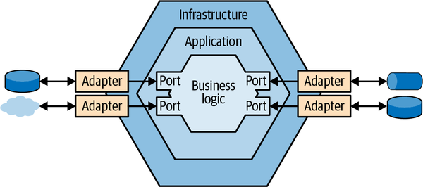
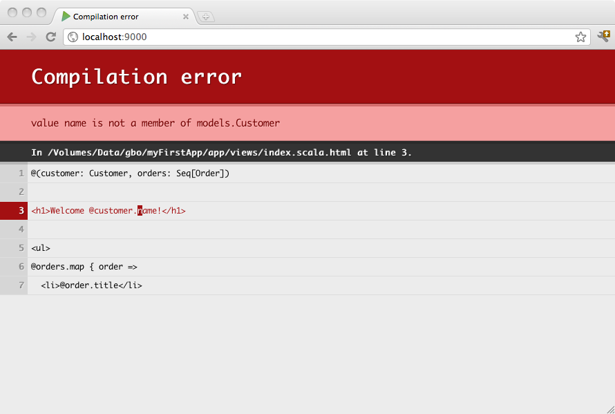
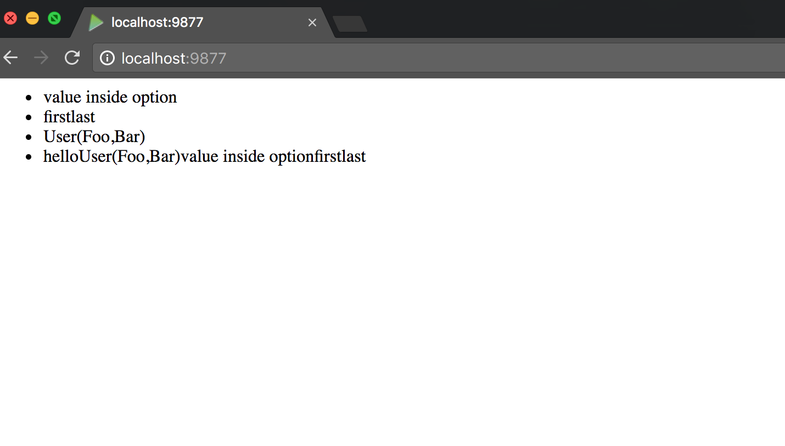

java -versionPlay Framework
Daniel Hinojosa
Introduction to Play Framework
What is Play?
Play is a high-productivity Java and Scala web application framework that integrates components and APIs for modern web application development.
Play was developed by web developers for web application development.
Play MVC
Play’s Model-View-Controller (MVC) architecture familiar and easy to learn.
Play provides concise and functional programming patterns. And, the large community developing Play applications provides an excellent resource for getting your questions answered.
As a full-stack framework, Play includes all the components you need to build Web Applications and REST services, such as:
An integrated HTTP server
Form handling
Cross-Site Request Forgery (CSRF) protection
A powerful routing mechanism
I18n support, and more.
Play Hot Reloading
Play saves precious development time by directly supporting everyday tasks and hot reloading so that you can immediately view the results of your work
Play Under the Hood
Play’s lightweight, stateless, web-friendly architecture uses Akka and Akka Streams under the covers to provide predictable and minimal resource consumption (CPU, memory, threads).
Thanks to its reactive model, applications scale naturally–both horizontally and vertically. See Elasticity and Efficient Resource Usage for more information.
Database Agnostic
Play is non-opinionated about database access, and integrates with many object relational mapping (ORM) layers
It supports Anorm, Slick, and JPA out of the box, but many customers use NoSQL or other ORMs
Installation
Requirements
Play requires:
Java versions SE 8 through SE 11, inclusive
sbt - we recommend the latest version
Verifying Java
To check that you have Java SE 1.8 or higher, enter the following in a terminal:
You should see something like:
openjdk version "1.8.0_222"
OpenJDK Runtime Environment (AdoptOpenJDK)(build 1.8.0_222-b10)
OpenJDK 64-Bit Server VM (AdoptOpenJDK)(build 25.222-b10, mixed mode)Verifying SBT
To check the latest SBT, enter the following in a terminal:
sbt sbtVersionYou should see something like:
[warn] No sbt.version set in project/build.properties, base directory: /Users/danno/Development/mine/advanced_java
[info] welcome to sbt 1.7.1 (Oracle Corporation Java 11)
[info] loading settings for project global-plugins from idea.sbt,plugins.sbt ...
[info] loading global plugins from /Users/me/.sbt/1.0/plugins
[info] set current project to advanced_java (in build file:/Users/me/Development/mine/advanced_java/)Bootstrapping an Application
Play expects a specific project structure
If you already have sbt installed, you can use a giter8 template, similar to a Maven archetype, to create a new Play project.
This gives you the advantage of setting up your project folders, build structure, and development environment — all with one command.
sbt new playframework/play-scala-seed.g8After the template creates the project:
Enter
sbt runto download dependencies and start the system.In a browser, enter http://localhost:9000/ to view the welcome page.
IntelliJ
Getting started with Play 2.x
Before you start generating your Play project, make sure that the Scala plugin is downloaded and enabled in IntelliJ IDEA.
IntelliJ IDEA supports Play versions 2.4 and later.
Common scenarios for generating a Play 2 project in IntelliJ IDEA:
If you have an already existing Play 2 project, you can import it or check out from version control.
In this case you can follow the regular procedure for importing or cloning a project.
If you are not familiar with Play 2 framework and want to learn how to use it, create a Play project via IntelliJ IDEA that will generate an executable application.
If you want to manually add a support for Play 2 framework, create an sbt project.
Create a new Play 2 project
Launch the New Project wizard.
If no project is currently opened in IntelliJ IDEA, click New Project on the welcome screen.
Otherwise, select menu: File[New > Project] from the main menu.
From the options on the left, under the Play 2.x.
 Figure 1. New Project dialog
Figure 1. New Project dialog
Follow Wizard and Create
Follow the steps suggested in the wizard and click Create.
IntelliJ IDEA generates the Play 2 project with the appropriate structure, dependencies and an executable application.
 Figure 2. Play 2 project editor and tool windows
Figure 2. Play 2 project editor and tool windows
Create an sbt project with Play 2 framework
Create an sbt project.

Follow the steps suggested in the wizard and click Finish
IntelliJ IDEA creates an sbt project
Adding Play Dependencies
Open the build.sbt file in the editor and add Play as a project dependency.
libraryDependencies ++=Seq("com.typesafe.play" %% "play" % "2.7.3")Open the plugins.sbt file in the editor and add the Play 2 plugin.
addSbtPlugin("com.typesafe.play" % "sbt-plugin" % "2.7.3")
Automatic Dependencies
IntelliJ IDEA downloads the appropriate dependencies and adds them to the sbt projects tool window.
 Figure 3. sbt tool window
Figure 3. sbt tool window
What if it didn’t automatically load anything?
Please note that the Play 2 framework project structure is not generated and you need to add everything manually.
Check the Play 2 project structure
At this point you can start creating Play 2 templates since IntelliJ IDEA supports them as soon as support for Play 2 framework is added and develop your project further.
You can use code completion, navigation and on-the-fly code analysis features in your Play 2 files.
IntelliJ IDEA also supports code assistance for routes files and code inspections.
Open an existing Play 2 project
On the welcome screen, select Open
Alternatively, from the main menu, select File ▸ Open
In the dialog that opens, locate your project and if it is an sbt project, select the menu[Open]
In the dialog that opens, click Open as Project
IntelliJ IDEA opens the project and loads all the necessary dependencies.
If your project is not an sbt project, refer to the import project section.
Run and debug Play 2 application
If you want to run the application:
In the project tool window, right-click the application.
In the context menu, select Run Play 2 App
If you need to access the Run/Debug Configurations dialog:
On the main menu, select Run ▸ Edit Configurations
Click the
 Play 2 App to create a new configuration.
Play 2 App to create a new configuration.
Specifying Run/Debug Configurations
Specify run/debug configuration settings.
The default settings are enough for running and debugging purposes.

Adding the Browser
On the main toolbar, click the
 icon to run or the
icon to run or the  icon to debug your application.
icon to debug your application.You can check the output of your application in the default browser http://localhost:9000
If you want to stop the server session, press Cmd+P for macOS.

Work with Play2 settings
You can use Play 2 settings to configure compiler options and configure formatting for route files.
You can also view and edit a list of default template imports.
Press Languages ▸ Frameworks ▸ Play2
Depending on what settings you want to configure, on the Play2 settings page, select the appropriate tab and adjust the settings.
Use the Other tab to check and edit the list of template imports that get retrieved from the descriptor when you refresh your project.

Figure 4. Play settings
Lab: Bootstrapping Your Application
Creating a Basic Application
Exploring the Basic Application
Let’s explore our application and get to know all the components
Ask questions about the layout, where everything is located
We can discuss the basics of routes, pages, and views
Design Principles
Why do we need to discuss?
If we don’t have a plan on how to organize our code, things can get messy
Everything should have a place, and everyone should know how to organize a code base
Every layer should be completely testable in isolation
This section is not about Play Framework per se, but how to organize code bases
Hexagonal Architecture

Unit Testing
Lab: Basic Application
Guice
Introduction to Dependency Injection
In layman’s terms, a wiring framework.
The Art of "Componentizing" Software.
Bringing back the promise of "Code Reuse"
Ties into TDD (Test Driven Development)
Decoupling Components as a better strategy
Advantage of Testable, and Modular Code
Adherence to the Single Responsibility Principle
The Single Responsibility Principle
The single responsibility principle states that every module or class should have responsibility over a single part of the functionality provided by the software,
Tight Coupling As An Example
Sample from "Guide to Writing Testable Code"
class House {
Kitchen kitchen = new Kitchen();
Bedroom bedroom;
House() {
bedroom = new Bedroom();
}
// ...
}Removing That Coupling As An Example
Removing the tight coupling
class House {
Kitchen kitchen;
Bedroom bedroom;
// Have Guice create the objects
// and pass them in
@Inject
House(Kitchen k, Bedroom b) {
kitchen = k;
bedroom = b;
}
// ...
}Bringing in a Heftier Example
A Real World Example
package com.xyzcorp;
import java.time.LocalDate;
import java.util.List;
public class AlbumService {
private final AlbumDAO dao;
public AlbumService(AlbumDAO dao) {
this.dao = dao;
}
public List<Album> findTop10AlbumsForTheWeek
(LocalDate localDate) {
return this.dao.findTopAlbums(localDate, 10);
}
}Better Design and Loose Coupling Makes Testable Software
Running a test
@Test
public void testGettingTheTop10List() {
AlbumDAO albumDAO = mock(AlbumDAO.class); //Using Mockito
LocalDate date = LocalDate.of(2016, 7, 24);
when(albumDAO.findTopAlbums(date, 10)).thenReturn(fakeList);
//Subject Under Test
AlbumService albumService = new AlbumService(albumDAO);
albumService.findTop10AlbumsForTheWeek(date);
}Wiring the classic way without a framework
public static void main(String[] args) {
AlbumDAO albumDAO = new MySQLDAO("jdbc:mysql://localhost:3306", "scott", "tiger");
AlbumService albumService = AlbumService.setAlbumDAO(albumDAO);
//Tons of boilerplate code for setup afterwards
}We can plugin a MySQLDAO or PostgreSQLDAO or a MongoDBDAO |
Downside to manually injecting dependencies
Downside to this method:
Can get real messy
Not flexible
Not maintainable over time
Benefits of Google Guice and Dependency Injection in General
Using Google Guice
public class Runner {
public static void main(String[] args) {
Injector injector = Guice.createInjector(new AlbumModule());
//Everything is already wired!
AlbumService albumService = injector.getInstance(AlbumService.class);
//0 or minimum of lines after this.
}
}| DAO Code is wired in with annotations and Google Guice |
About Google Guice
Dependency Inject Framework
Uses Code above Configuration
Uses Type Safety for Component Wiring
Applies the "Hollywood Principal", "Don’t call us we will call you"
Tries to avoid Factories
Billed as
@Injectis the newnewAdheres to JSR-330 (JSR-330 is the Dependency Injection Java Specification Request)
Installing Guice
Including Guice in Maven
<dependency>
<groupId>com.google.inject</groupId>
<artifactId>guice</artifactId>
<version>5.1.0</version>
</dependency>Including Guice in Gradle
compile 'com.google.inject:guice:5.1.0'Including Guice in SBT
libraryDependencies += "com.google.inject" % "guice" % "5.1.0"Rules about Dependency Injection
Make the component injectable, naturally occurs with testable code
The framework usually should not be exposed within the code.
Other than annotations, the code should not about it’s wiring be it Spring or Guice.
Create your components based on requirements, there is a way to wire components, when those components are designed well.
Bootstrapping a Guice Module
Bootstrapping of a
Moduleis done in an implementation of ancom.google.inject.AbstractModuleOnce extended, implement as part of the module contract
configureIn the configure method, use
bindto bind components to one another.
Example Module
AlbumModule.java
package com.xyzcorp;
import com.google.inject.AbstractModule;
public class AlbumModule extends AbstractModule {
@Override
protected void configure() {
}
}Linked Bindings
Links a type to a concrete implementation.
Whenever an implementation is required it can now be found using the type
AlbumModule.java
package com.xyzcorp;
import com.google.inject.AbstractModule;
import com.xyzcorp.dao.AlbumDAO;
import com.xyzcorp.dao.StandardAlbumDAO;
public class AlbumModule extends AbstractModule {
@Override
protected void configure() {
bind(AlbumDAO.class).to(StandardAlbumDAO.class);
}
}Creating an Injector
The injector internally holds the dependency graphs described in your application.
When you request an instance of a given type, the injector figures out:
What objects to construct
Resolves their dependencies
Wires everything together.
To specify how dependencies are resolved, configure your injector with bindings!
Example of creating an injector with a Module
package com.xyzcorp;
import com.google.inject.Guice;
import com.google.inject.Injector;
import com.xyzcorp.dao.AlbumDAO;
public class Runner {
public static void main(String[] args) throws SQLException {
Injector injector = Guice.createInjector(new AlbumModule());
AlbumDAO dao = injector.getInstance(StandardAlbumDAO.class);
dao.insert(new Album("Joshua Tree", "U2", 1987));
}
}Binding Annotations
Guice uses annotation to bind multiple components for the same type.
For example, as in our example, a Data Access Object (DAO) will have multiple bindings.
Doing so, will require creation of annotations that can bind via
FIELD,PARAMETER, andMETHOD
Creating Binding Annotations
The following is a standard approach for creating an annotation
You can create an
OracleandMySQLannotations for a well-rounded example.
package com.xyzcorp.annotations;
import com.google.inject.BindingAnnotation;
import java.lang.annotation.Retention;
import java.lang.annotation.Target;
import static java.lang.annotation.ElementType.*;
import static java.lang.annotation.RetentionPolicy.RUNTIME;
@BindingAnnotation
@Target({FIELD, PARAMETER, METHOD})
@Retention(RUNTIME)
public @interface H2 {}Creating Binding Annotations with @Qualifier
QualifierJSR-330 meta-annotation that tells Guice that this is a binding annotation
Guice will produce an error if multiple binding annotations are ever applied to the same member
Guice’s
@BindingAnnotationis also used for this purpose in older code.
package com.xyzcorp.annotations;
import com.google.inject.BindingAnnotation;
import java.lang.annotation.Retention;
import java.lang.annotation.Target;
import static java.lang.annotation.ElementType.*;
import static java.lang.annotation.RetentionPolicy.RUNTIME;
@Qualifier
@Target({FIELD, PARAMETER, METHOD})
@Retention(RUNTIME)
public @interface H2 {}Guice Provider
As it’s own limited capacity factory is the
Provider<T>Provideris parameterized to provide what the type of what it provides.Providerare injectable in of themselves, but can be used to provide custom made objects when necessary.The signature of a
Provideris the following:
Guice’s Provider Signature
public interface Provider<T> {
T get();
}Creating a Provider
package com.xyzcorp;
import com.google.inject.AbstractModule;
import com.google.inject.name.Names;
import com.xyzcorp.dao.AlbumDAO;
import com.xyzcorp.dao.H2ConnectionProvider;
import com.xyzcorp.dao.StandardAlbumDAO;
import java.sql.Connection;
public class AlbumModule extends AbstractModule {
@Override
protected void configure() {
bind(Connection.class).annotatedWith(H2.class)
.toProvider(H2ConnectionProvider.class);
bind(AlbumDAO.class).to(StandardAlbumDAO.class);
}
}Using a Binding Annotation injecting the H2 Connection to our DAO
This will inject the
java.sql.Connectioninto this setterSince there is binding annotation, it will inject a specific one the
H2Connection
@Inject
public void setConnection(@H2 Connection connection) {
this.connection = connection;
}@Named
Guice comes with a built-in binding annotation
@Namedthat uses a string to provide a name.Use this method if you wish not to use an annotation to discriminate what objects you wish to inject.
For example, instead of an
@H2annotation we could’ve used:
Binding with @Named
If we used the following binding in the
AlbumModule:Here we are using a string
H2as the binding
bind(Connection.class)
.annotatedWith(Names.named("H2"))
.toProvider(H2ConnectionProvider.class);Using @Named annotation
@Override
@Inject
public void setConnection(@Named("H2") Connection connection) {
this.connection = connection;
}Instance Bindings
You can bind a type to a specific instance of that type using
toInstance.Doing an instance is considered a Singleton, only one instance available.
package com.xyzcorp;
import com.google.inject.AbstractModule;
import com.google.inject.name.Names;
import com.xyzcorp.annotations.H2;
import com.xyzcorp.dao.AlbumDAO;
import com.xyzcorp.dao.H2ConnectionProvider;
import com.xyzcorp.dao.StandardAlbumDAO;
import java.sql.Connection;
public class AlbumModule extends AbstractModule {
@Override
protected void configure() {
bind(String.class).annotatedWith(Names.named("url")).toInstance
("jdbc:h2:tcp://localhost/~/test");
bind(String.class).annotatedWith(Names.named("userName")).toInstance
("sa");
bind(String.class).annotatedWith(Names.named("password")).toInstance
("");
...
}
}Using a String is horrible idea in general and it is better to use a value object |
Value Objects
Value Object is an object that represents a concept from your problem Domain. It is important in DDD that Value Objects support and enrich Ubiquitous Language of your Domain. They are not just primitives that represent some values - they are domain citizens that model behavior of your application. _
Value Objects in Java and Scala
Creating a value object with the new
record syntaxpublic record UserName(String name);Create a value object with a Scala
case classcase class UserName(name:String)Instance Bindings with Value Object
You can bind a type to a specific instance of that type using
toInstance.Doing an instance is considered a Singleton, only one instance available.
package com.xyzcorp;
import com.google.inject.AbstractModule;
import com.google.inject.name.Names;
import com.xyzcorp.annotations.H2;
import com.xyzcorp.dao.AlbumDAO;
import com.xyzcorp.dao.H2ConnectionProvider;
import com.xyzcorp.dao.StandardAlbumDAO;
import java.sql.Connection;
public class AlbumModule extends AbstractModule {
@Override
protected void configure() {
bind(Url.class).annotatedWith(Names.named("url")).toInstance
(new URL("jdbc:h2:tcp://localhost/~/test"));
bind(UserName.class).annotatedWith(Names.named("userName")).toInstance
(new UserName("user301212");
bind(Password.class).annotatedWith(Names.named("password")).toInstance
(new Password("30d#201abq".toBytes());#
...
}
}Wire the named items into our provider
@Inject
public H2ConnectionProvider(@Named("url") Url url,
@Named("userName") UserName userName,
@Named("password") Password password) {
this.url = url;
this.userName = userName;
this.password = password;
}Annotations @Provides
If we didn’t want to actually create an actual class for a Provider we could’ve used the @Provides annotation.
With some caveats:
The
Providermust be declared in theModuleAny
Exceptionthat is thrown inside of@Provideswill in turn throw aProvisionException
public class AlbumModule extends AbstractModule {
@Override
protected void configure() {
...
}
@Provides
Connection provideConnection() {
JdbcConnectionPool cp = JdbcConnectionPool.create(
"jdbc:h2:tcp://localhost/~/test", "sa", "");
try {
return cp.getConnection();
} catch (SQLException e) {
throw new RuntimeException("Unable to create a connection", e);
}
}
}Just-in Time Bindings
There are two annotations that you can use that maps the abstraction and the implementation.
@ProvidedBy@ImplementedBy
These annotations do the binding without the mapping in the AbstractModule
@ProvidedBy
@ProvidedBy(DatabaseTransactionLogProvider.class)
public interface TransactionLog {
void logConnectException(UnreachableException e);
void logChargeResult(ChargeResult result);
}This is the equivalent of
bind(TransactionLog.class)
.toProvider(DatabaseTransactionLogProvider.class);@ImplementedBy
@ImplementedBy(PayPalCreditCardProcessor.class) (1)
public interface CreditCardProcessor {
ChargeResult charge(String amount, CreditCard creditCard)
throws UnreachableException;
}| 1 | @ImplementedBy shows the sole implementer of the interface |
This is the equivalent of:
bind(CreditCardProcessor.class).to(PayPalCreditCardProcessor.class);Scopes
By Default, Guice returns a new instance each time it supplies a value
A Scope can be made by either the by the
bindstatement or annotation.Classes annotated
@Singletonmust be threadsafe`
Either annotated on the class.
@Singleton
public class InMemoryTransactionLog implements TransactionLog {
/* everything here should be threadsafe! */
}Bound in the AbstractModule
bind(TransactionLog.class).to(InMemoryTransactionLog.class).in(Singleton.class);This can also be annotation on a Provider<T>
@Provides @Singleton
TransactionLog provideTransactionLog() {
...
}Integration Testing Using a Module
Consider multiple
AbstractModuleOne will be necessary for production code.
But the other can be used for integration testing.
For example, the production database is wired with Guice for Production while the test database is used for Testing and Development.
Modules
Dependency Injection
Dependency injection is a widely used design pattern that helps separate your components’ behaviour from dependency resolution. Play supports both runtime dependency injection based on JSR 330 (described in this page) and compile time dependency injection in Scala.
Runtime dependency injection is so called because the dependency graph is created, wired and validated at runtime. If a dependency cannot be found for a particular component, you won’t get an error until you run your application.
Play supports Guice out of the box, but other JSR 330 implementations can be plugged in.
| Guice is a Java library and the examples in this documentation use Guice’s built-in Java API. If you prefer a Scala DSL you might wish to use the scala-guice or sse-guice library. |
Motivation
Dependency injection achieves several goals:
It allows you to easily bind different implementations for the same component. This is useful especially for testing, where you can manually instantiate components using mock dependencies or inject an alternate implementation.
It allows you to avoid global static state. While static factories can achieve the first goal, you have to be careful to make sure your state is set up properly. In particular Play’s (now deprecated) static APIs require a running application, which makes testing less flexible. And having more than one instance available at a time makes it possible to run tests in parallel.
The Guice wiki has some good examples explaining this in more detail.
How it works
Play provides a number of built-in components and declares them in modules such as its
BuiltinModuleThese bindings describe everything that’s needed to create an instance of
Application, including, by default, a router generated by the routes compiler that has your controllers injected into the constructor.These bindings can then be translated to work in Guice and other runtime DI frameworks.
What Play Provides
The Play team maintains the Guice module, which provides a
GuiceApplicationLoaderwhich does the binding conversion for Guice, creates the Guice injector with those bindings, and requests anApplicationinstance from the injectorThere are also third-party loaders that do this for other frameworks, including Scaldi and Spring
Alternatively, Play provides a
BuiltInComponentstrait that allows you to create a pure Scala implementation that wires together your app at compile time
Declaring runtime DI dependencies
If you have a component, such as a controller, and it requires some other components as dependencies, then this can be declared using the @Inject annotation.
The
@Injectannotation can be used on fields or on constructors.Also, Guice does come with several other types of injections, but constructor injection is generally the most clear, concise, and testable in Scala, so we recommend using it.
Guice is able to automatically instantiate any class with an
@Injecton its constructor without having to explicitly bind it. This feature is called just in time bindings
import javax.inject._
import play.api.libs.ws._
class MyComponent @Inject() (ws: WSClient) {
// ...
}Dependency injecting controllers
Play’s routes compiler generates a router class that declares your controllers as dependencies in the constructor. This allows your controllers to be injected into the router.
Prefixing the controller name with an
@symbol takes on a special meaning: instead of the controller being injected directly, aProviderof the controller will be injected.This allows, for example, prototype controllers, as well as an option for breaking cyclic dependencies
Component lifecycle
The dependency injection system manages the lifecycle of injected components, creating them as needed and injecting them into other components.
New Instances
New instances are created every time a component is needed
If a component is used more than once, then, by default, multiple instances of the component will be created
If you only want a single instance of a component then you need to mark it as a singleton
Instances Created Lazily
Instances are created lazily when they are needed
If a component is never used by another component, then it won’t be created at all
This is usually what you want. For most components there’s no point creating them until they’re needed
However, in some cases you want components to be started up straight away or even if they’re not used by another component
For example, you might want to send a message to a remote system or warm up a cache when the application starts
You can force a component to be created eagerly by using an eager binding
Non-Automatic Cleanup
Instances are not automatically cleaned up* beyond normal garbage collection.
Components will be garbage collected when they’re no longer referenced, but the framework won’t do anything special to shut down the component, like calling a
closemethod.However, Play provides a special type of component, called the
ApplicationLifecyclewhich lets you register components to shut down when the application stops
Singletons
Sometimes you may have a component that holds some state, such as a cache, or a connection to an external resource, or a component might be expensive to create.
In these cases it may be important that there is only be one instance of that component.
This can be achieved using the @Singleton annotation:
import javax.inject._
@Singleton
class CurrentSharePrice {
@volatile private var price = 0
def set(p: Int) = price = p
def get = price
}Stopping/cleaning up
Some components may need to be cleaned up when Play shuts down, for example, to stop thread pools
Play provides an
ApplicationLifecyclecomponent that can be used to register hooks to stop your component when Play shuts downThe
ApplicationLifecyclewill stop all components in reverse order from when they were created.This means any components that you depend on can still safely be used in your component’s stop hook.
Because you depend on them, they must have been created before your component was, and therefore won’t be stopped until after your component is stopped.
Stopping/cleaning up by example
import scala.concurrent.Future
import javax.inject._
import play.api.inject.ApplicationLifecycle
@Singleton
class MessageQueueConnection @Inject() (lifecycle: ApplicationLifecycle) {
val connection = connectToMessageQueue()
lifecycle.addStopHook { () =>
Future.successful(connection.stop())
}
//...
}| It’s very important to ensure that all components that register a stop hook are singletons. Any non singleton components that register stop hooks could potentially be a source of memory leaks, since a new stop hook will be registered each time the component is created. |
Providing custom bindings
It is considered good practice to define a trait for a component, and have other classes depend on that trait, rather than the implementation of the component
By doing that, you can inject different implementations, for example you inject a mock implementation when testing your application.
In this case, the DI system needs to know which implementation should be bound to that trait.
The way we recommend that you declare this depends on whether you are writing a Play application as an end user of Play, or if you are writing library that other Play applications will consume.
Play applications
We recommend that Play applications use whatever mechanism is provided by the DI framework that the application is using. Although Play does provide a binding API, this API is somewhat limited, and will not allow you to take full advantage of the power of the framework you’re using.
Since Play provides support for Guice out of the box, the examples below show how to provide bindings for Guice.
Binding annotations
The simplest way to bind an implementation to an interface is to use the Guice @ImplementedBy annotation.
import com.google.inject.ImplementedBy
@ImplementedBy(classOf[EnglishHello])
trait Hello {
def sayHello(name: String): String
}
class EnglishHello extends Hello {
def sayHello(name: String) = "Hello " + name
}Programmatic bindings
import com.google.inject.AbstractModule
import com.google.inject.name.Names
class Module extends AbstractModule {
override def configure() = {
bind(classOf[Hello])
.annotatedWith(Names.named("en"))
.to(classOf[EnglishHello])
bind(classOf[Hello])
.annotatedWith(Names.named("de"))
.to(classOf[GermanHello])
}
}Placing Module at root
If you call this module
Moduleand place it in the root package, it will automatically be registered with Play.Alternatively, if you want to give it a different name or put it in a different package, you can register it with Play by appending its fully qualified class name to the
play.modules.enabledlist inapplication.conf:
play.modules.enabled += "modules.HelloModule"Disabling Modules
You can also disable the automatic registration of a module named Module in the root package by adding it to the disabled modules:
play.modules.disabled += "Module"Configurable bindings
Sometimes you might want to read the Play
Configurationor use aClassLoaderwhen you configure Guice bindings.You can get access to these objects by adding them to your module’s constructor.
In the example below, the
Hellobinding for each language is read from a configuration file.This allows new
Hellobindings to be added by adding new settings in yourapplication.conffile.
Eager bindings
If you only want to create these objects once, perhaps because they’re expensive to create, then you should use the
@Singletonannotation.If you want to create them once and also create them eagerly when the application starts up, rather than lazily when they are needed, then you can Guice’s eager singleton binding.
import com.google.inject.AbstractModule
import com.google.inject.name.Names
// A Module is needed to register bindings
class Module extends AbstractModule {
override def configure() = {
// Bind the `Hello` interface to the `EnglishHello` implementation as eager singleton.
bind(classOf[Hello])
.annotatedWith(Names.named("en"))
.to(classOf[EnglishHello])
.asEagerSingleton()
bind(classOf[Hello])
.annotatedWith(Names.named("de"))
.to(classOf[GermanHello])
.asEagerSingleton()
}
}Applying it to a shutdown hook
Eager singletons can be used to start up a service when an application starts.
They are often combined with a shutdown hook so that the service can clean up its resources when the application stops.
import scala.concurrent.Future
import javax.inject._
import play.api.inject.ApplicationLifecycle
// This creates an `ApplicationStart` object once at start-up and registers hook for shut-down.
@Singleton
class ApplicationStart @Inject() (lifecycle: ApplicationLifecycle) {
// Shut-down hook
lifecycle.addStopHook { () =>
Future.successful(())
}
//...
}import com.google.inject.AbstractModule
class StartModule extends AbstractModule {
override def configure() = {
bind(classOf[ApplicationStart]).asEagerSingleton()
}
}Play libraries
If you’re implementing a library for Play, then you probably want it to be DI framework agnostic, so that your library will work out of the box regardless of which DI framework is being used in an application. For this reason, Play provides a lightweight binding API for providing bindings in a DI framework agnostic way.
To provide bindings, implement a
Moduleto return a sequence of the bindings that you want to provide.The
Moduletrait also provides a DSL for building bindings
import play.api.inject._
class HelloModule extends Module {
def bindings(environment: Environment, configuration: Configuration) = Seq(
bind[Hello].qualifiedWith("en").to[EnglishHello],
bind[Hello].qualifiedWith("de").to[GermanHello]
)
}Enabling the Module
play.modules.enabled += "com.example.HelloModule"Environment and Configuration
The
Modulebindingsmethod takes a PlayEnvironmentandConfiguration.You can access these if you want to configure the bindings dynamically
Module bindings support eager bindings.
To declare an eager binding, add
.eagerlyat the end of yourBinding.
Things to Keep in Mind
Not all DI frameworks support just in time bindings. Make sure all components that your library provides are explicitly bound.
Try to keep binding keys simple - different runtime DI frameworks have very different views on what a key is and how it should be unique or not.
Excluding modules
If there is a module that you don’t want to be loaded, you can exclude it by appending it to the
play.modules.disabledproperty inapplication.conf
play.modules.disabled += "play.api.db.evolutions.EvolutionsModule"Identifying circular dependencies
Circular dependencies happen when one of your components depends on another component that depends on the original component (either directly or indirectly)
import javax.inject.Inject
class Foo @Inject() (bar: Bar)
class Bar @Inject() (baz: Baz)
class Baz @Inject() (foo: Foo)Circular Dependency Remediation
You can work around the circular dependency problem by using a Provider:
import javax.inject.Inject
import javax.inject.Provider
class Foo @Inject() (bar: Bar)
class Bar @Inject() (baz: Baz)
class Baz @Inject() (foo: Provider[Foo])Dependency Recommendations
Generally, circular dependencies can be resolved by breaking up your components in a more atomic way, or finding a more specific component to depend on
A common problem is a dependency on
Application.When your component depends on
Applicationit’s saying that it needs a complete application to do its job; typically that’s not the case.Your dependencies should be on more specific components (e.g.
Environment) that have the specific functionality you need.As a last resort you can work around the problem by injecting a
Provider[Application].
Lab: Creating a Module
Routes
Built-in HTTP Router
The router is the component in charge of translating each incoming HTTP request to an
ActionAn HTTP request is seen as an event by the MVC framework. This event contains two major pieces of information:
the request path (e.g.
/clients/1542,/photos/list), including the query stringthe HTTP method (e.g.
GET,POST, …).
Routes are defined in the conf/routes file, which is compiled.
Errors when Routes not Found
When the route is not found you will get a screenshot like this:

Routes Dependency Injected
Play’s default routes generator creates a router class that accepts controller instances in an
@Inject-annotated constructor.That means the class is suitable for use with dependency injection and can also be instantiated manually using the constructor.
Routes Syntax
conf/routes is the configuration file used by the router
This file lists all of the routes needed by the application
Each route:
consists of an HTTP method and URI pattern
is associated with a call to an Action generator
GET example
# Display a client.
GET /clients/:id controllers.Clients.show(id: Long)All HTTP Methods included
The HTTP method can be any of the valid methods supported by HTTP:
GETPATCHPOSTPUTDELETEHEAD
The URI pattern
The URI pattern defines the route’s request path.
Parts of the request path can be dynamic.
Static path - For example, to exactly match incoming GET /clients/all requests, you can define this route:
GET /clients/all controllers.Clients.list()Dynamic parts - If you want to define a route that retrieves a client by ID, you’ll need to add a dynamic part:
GET /clients/:id controllers.Clients.show(id: Long)| A URI pattern may have more than one dynamic part |
Dynamic Parts with Pattern Matching
The default matching strategy for a dynamic part is defined by the regular expression
[^/]+Any dynamic part defined as
:idwill match exactly one URI path segment.Unlike other pattern types, path segments are automatically URI-decoded in the route, before being passed to your controller, and encoded in the reverse route
Dynamic Parts with More than one /
Using the
*idsyntaxCan parse multiple URI path segments separated by
/This is also known as a wildcard pattern
This will use the
.*regular expression
Example of dynamic URL parsing
Here we can parse
GET /files/images/logo.pngThe name dynamic part will capture the
images/logo.pngvalueThe dynamic parts spanning several
/are not decoded by the router or encoded by the reverse routerIt is your responsibility to validate the raw URI segment as you would for any user input
The reverse router simply does a string concatenation, so you will need to make sure the resulting path is valid, and does not, for example, contain multiple leading slashes or non-ASCII characters
GET /files/*name controllers.Application.download(name)Dynamic Parts with a Regular Expression
You can also define your own regular expression for the dynamic part, using the
$id<regex>syntaxJust like with wildcard routes, the parameter is not decoded by the router or encoded by the reverse router
You’re responsible for validating the input to make sure it makes sense in that context
GET /items/$id<[0-9]+> controllers.Items.show(id: Long)Call to the Action generator method
The last part of a route definition is the call.
This part must define a valid call to a method returning a
play.api.mvc.ActionvalueYour
Actionwill typically be in a controller as a methodIf the method does not define any parameters, just give the fully-qualified method name
The URL
/ will go to the homePage() method in the Application controllerGET / controllers.Application.homePage()Extracting URI Parameters
If the action method defines some parameters, all these parameter values will be searched for in the request URI
This will either extracted from:
The URI path itself
The query string.
Extract the page parameter
:page from the pathGET /:page controllers.Application.show(page)Extract the page parameter from the query string, note the URI doesn’t contain the parameter formally
GET / controllers.Application.show(page)Example of show method in a Controller
def show(page: String) = Action {
loadContentFromDatabase(page)
.map { htmlContent =>
Ok(htmlContent).as("text/html")
}
.getOrElse(NotFound)
}Parameter Types
You can transform any parameter into a Scala type
For example, take the Id and ensure that it is a type
LongIf the URL is called incorrectly then the client will receive a
404not found
The route with a typed parameter
GET /clients/:id controllers.Clients.show(id: Long)The corresponding
Action codedef show(id: Long) = Action {
Client
.findById(id)
.map { client =>
Ok(views.html.Clients.display(client))
}
.getOrElse(NotFound)
}Supporting Parameter Types
Play supports the following Parameter Types:
StringIntLongDoubleFloatBooleanUUIDAnyValwrappers for other supported types
Parameters with fixed values
Sometimes you’ll want to use a fixed value for a parameter:
Extract the page parameter from the path, or fix the value for
/GET / controllers.Application.show(page = "home")
GET /:page controllers.Application.show(page)Parameters with default values
Parameters with default values
You can also provide a default value that will be used if no value is found in the incoming request:
Calling a URL like
/clients?page=3 will override the default of 1GET /clients controllers.Clients.list(page: Int ?= 1)Optional Parameters
You can also specify an optional parameter that does not need to be present in all requests:
The version parameter is optional but can be provided with
/api/list-all?version=3.0GET /api/list-all controllers.Api.list(version: Option[String])List parameters
You can also specify list parameters for repeated query string parameters:
Reading in a single parameter in the list
/api/list-items?item=red&item=new&item=slippersGET /api/list-items controllers.Api.listItems(item: List[String])Reading two parameters for
/api/list-int-items?item=1&item=42GET /api/list-int-items controllers.Api.listIntItems(item: List[Int])Routing priority
Many routes can match the same request.
If there is a conflict, the first route (in declaration order) is used.
Reverse Routing
The router can also be used to generate a URL from within a Scala call.
This makes it possible to centralize all your URI patterns in a single configuration file, so you can be more confident when refactoring your application!
For each controller used in the routes file, the router will generate a ‘reverse controller’ in the routes package
Every controller will have the same action methods, with the same signature, but returning a
play.api.mvc.Callinstead of aplay.api.mvc.ActionThe
play.api.mvc.Calldefines an HTTP call, and provides both the HTTP method and the URI
Reverse Routing: Create your Action
package controllers
import javax.inject.Inject
import play.api._
import play.api.mvc._
class Application @Inject() (cc: ControllerComponents) extends AbstractController(cc) {
def hello(name: String) = Action {
Ok("Hello " + name + "!")
}
}Apply the route
Applying the route as normal
GET /hello/:name controllers.Application.hello(name)Retrieving the Reverse Route
You can then reverse the URL to the hello action method
Use
routesand call the controllerThe benefit is if you ever change the URL, all your code, will not be affected!
There is a routes sub-package for each controller package if you need better organization
def helloBob = Action {
Redirect(routes.Application.hello("Bob"))
}Reverse routing in detail
The reverse action method works quite simply:
It takes your parameters and substitutes them back into the route pattern.
In the case of path segments
(:foo), the value is encoded before the substitution is done.For regex and wildcard patterns the string is substituted in raw form since the value may span multiple segments.
Make sure you escape those components as desired when passing them to the reverse route, and avoid passing unvalidated user input
Relative Routes
There are instances where returning a relative route instead of an absolute may be useful.
The routes returned by
play.mvc.Callare always absolute (they lead with a/),This though can lead to problems when requests to your web application are rewritten by HTTP proxies, load balancers, and API gateways.
Relative Route Applications
Some examples where using a relative route would be useful include:
Hosting an app behind a web gateway that prefixes all routes with something other than what is configured in your conf/routes file, and roots your application at a route it’s not expecting.
When dynamically rendering stylesheets, you need asset links to be relative because they may end up getting served from different URLs by a CDN
To be able to generate a relative route you need to know what to make the target route relative to (the start route).
The start route can be retrieved from the current RequestHeader.
Therefore, to generate a relative route it’s required that you pass in your current RequestHeader or the start route as a String parameter.
Relative Routes in Action, the Controller
package controllers
import javax.inject._
import play.api.mvc._
@Singleton
class Relative @Inject() (cc: ControllerComponents) extends AbstractController(cc) {
def helloview() = Action { implicit request =>
Ok(views.html.hello("Bob"))
}
def hello(name: String) = Action {
Ok(s"Hello $name!")
}
}Relative Routes in Action, the Route
Map the route to the Controller
GET /foo/bar/hello controllers.Relative.helloview
GET /hello/:name controllers.Relative.hello(name)Using the relative route in the view!
The
Requestis decorated withRequestHeaderand is brought into your template implicitlyNote that it decorates the method
hellowith arelativemethod
@(name: String)(implicit request: RequestHeader)
<h1>Hello @name</h1>
<a href="@routes.Relative.hello(name)">Absolute Link</a>
<a href="@routes.Relative.hello(name).relative">Relative Link</a>The result of the relative view
When requesting
/foo/bar/hellothe generated HTML will like the following sampleNotice how the relative link looks
Consider these implications when we deploy to an environment with a context-path
<!DOCTYPE html>
<html lang="en">
<head>
<title>Bob</title>
</head>
<body>
<a href="/hello/Bob">Absolute Link</a>
<a href="../../hello/Bob">Relative Link</a>
</body>
</html>Default Controllers
Play includes a Default controller which provides a handful of useful actions
These can be invoked directly from the routes file
Redirects to https://www.playframework.com/ with status "303 See Other"
GET /about controllers.Default.redirect(to = "https://www.playframework.com/")Responds with 404 Not Found
GET /orders controllers.Default.notFoundResponds with 500 Internal Server Error
GET /clients controllers.Default.errorResponds with 501 Not Implemented
GET /posts controllers.Default.todoTwirl Templates
What is Twirl?
Play comes with Twirl, a powerful Scala-based template engine, whose design was inspired by ASP.NET Razor. Specifically it is:
compact, expressive, and fluid: it minimizes the number of characters and keystrokes required in a file, and enables a fast, fluid coding workflow. Unlike most template syntaxes, you do not need to interrupt your coding to explicitly denote server blocks within your HTML. The parser is smart enough to infer this from your code. This enables a really compact and expressive syntax which is clean, fast and fun to type.
easy to learn: it allows you to quickly become productive, with a minimum of concepts. You use simple Scala constructs and all your existing HTML skills.
not a new language: we consciously chose not to create a new language. Instead we wanted to enable Scala developers to use their existing Scala language skills, and deliver a template markup syntax that enables an awesome HTML construction workflow.
editable in any text editor: it doesn’t require a specific tool and enables you to be productive in any plain old text editor
View Errors
Templates are compiled, so you will see any errors in your browser:

Play Scala Templates
Simple Text File that can create HTML, CSV, XML
Templates are compiled as standard Scala functions
If you create a views/Application/index.scala.html template file, it will generate a
views.html.Application.indexclass that has anapply()method@(customer: Customer, orders: List[Order]) <h1>Welcome @customer.name!</h1> <ul> @for(order <- orders) { <li>@order.title</li> } </ul>You can call it just like was a method in a class
val content = views.html.Application.index(c, o)
The Magic @ character
Twirl templates use
@as the single special character.When this character is encountered, it indicates the beginning of a dynamic statement.
You are not required to explicitly close the code block - the end of the dynamic statement will be inferred from your code
The
@customer.name is dynamic code that will be interpolatedHello @customer.name!Complex Code with Twirl
The template engine automatically detects the end of your code block by analyzing your code
It does well with with simple statements
If you want to insert a multi-token statement, explicitly mark it using parenthesis
Notice the parenthesis surrounding
customer.firstName and customer.lastNameHello @(customer.firstName + customer.lastName)!Do not include whitespace
Make sure not to include whitespaces between keywords of dynamic statements and parentheses.
Notice the space after the
@for@for (menu <- menuList) { ... } // Compilation error: '(' expected but ')' found.Complex Code Using Braces
You can also use curly brackets, to write a multi-statement block:
Notice the scala code with in the
{}Hello @{val name = customer.firstName + customer.lastName; name}!Escaping @ with @@
Because
@is a special character, you’ll sometimes need to escape it. Do this by using@@:
Using
@@ within an emailMy email is bob@@example.comTemplate Parameters
A template is like a function, so it needs parameters, which must be declared at the top of the template file
@(customer: Customer, orders: List[Order])Templates can also have default values in case one is not specified
@(title: String = "Home")You can also have parameter groups
This will be essential when applying
implicitparameters@(title: String)(body: Html)
Template Constructor
By default, a template is generated as a static function that can be invoked in any context
If your template has dependencies on components, such as the messages API, you may find it easier to inject it with the components (and other templates) that it needs
You can then inject that template into the controllers that use it
Twirl supports declaring a constructor for templates, using
@this()syntax at the start of the file, before the template parametersThe arguments to the constructor can be defined in the same way as the template parameters
@this(myComponent: MyComponent)
@(customer: Customer, orders: List[Order])Iterating
You can use the
forkeyword, in a pretty standard way
<ul>
@for(p <- products) {
<li>@p.name ($@p.price)</li>
}
</ul>| Make sure that { is on the same line with for to indicate that the expression continues to next line. |
If-blocks
If-blocks simply use Scala’s standard
ifstatement:
@if(items.isEmpty) {
<h1>Nothing to display</h1>
} else {
<h1>@items.size items!</h1>
}Declaring reusable blocks
You can create reusable code blocks by declaring a tag using @methodname where method name is your reusable block
@display(product: Product) = {
@product.name ([email protected])
}
<ul>
@for(product <- products) {
@display(product)
}
</ul>Reusable pure code blocks:
You can also create code blocks like the following @title block
@title(text: String) = @{
text.split(' ').map(_.capitalize).mkString(" ")
}
<h1>@title("hello world")</h1>Declaring code block this way in a template can be sometime useful but keep in mind that a template is not the best place to write complex logic. It is often better to externalize these kind of code in a Scala class (that you can store under the views/ package as well if you want). |
implicit reusable blocks
By convention a reusable block defined with a name starting with implicit will be marked as implicit
@implicitFieldConstructor = @{ MyFieldConstructor() }Declaring reusable values
You can define scoped values using the defining helper
@defining(user.firstName + " " + user.lastName) { fullName =>
<div>Hello @fullName</div>
}Import statements
You can import whatever you want at the beginning of your template (or sub-template)
@(customer: Customer, orders: List[Order])
@import utils._Import from Root
To make an absolute resolution, use root prefix in the import statement.
@import _root_.company.product.core._Common imports for all templates
If you have common imports, which you need in all templates, you can declare in build.sbt
TwirlKeys.templateImports += "org.abc.backend._"Comments
You can write server side block comments in templates using
@* *@:
@*********************
* This is a comment *
*********************@You can put a comment on the first line to document your template into the Scala API doc:
@*************************************
* Home page. *
* *
* @param msg The message to display *
*************************************@
@(msg: String)
<h1>@msg</h1>Escaping
By default, dynamic content parts are escaped according to the template type’s (e.g. HTML or XML) rules.
If you want to output a raw content fragment, wrap it in the template content type.
For example to output raw HTML:
<p>
@Html(article.content)
</p>| When using this feature, consider the security implications of outputting raw HTML if there is any possibility that the user can control the content. This technique is a common cause of Cross Site Scripting (XSS) vulnerabilities and is dangerous if not used with caution. |
String interpolation
The template engine can be used as a string interpolator
Basically, trade the
@for a$:
import play.twirl.api.StringInterpolation
val name = "Martin"
val p = html"<p>Hello $name</p>"Displaying Scala types
Twirl typically renders values of Scala types by calling
toStringmethod on them.However, if values are wrapped inside
Optionor collections (Seq,Array,TraversableOnce)Twirl first unwraps the values and then calls
toString
<ul>
<li>@Option("value inside option")</li>
<li>@List("first", "last")</li>
<li>@User("Foo", "Bar")</li>
<li>@List("hello", User("Foo", "Bar"), Option("value inside option"), List("first", "last"))</li>
</ul>
Forms
Form
Form handling and submission is an important part of any web application
Play comes with features that make handling simple forms easy and complex forms possible
Play’s form handling approach is based around the concept of binding data
When data comes in from a POST request
Play will look for formatted values and bind them to a Form object
From there, Play can use the bound form to value a case class with data, call custom validations, and so on
Typically forms are used directly from a
BaseControllerinstanceFormdefinitions do not have to match up exactly with case classes or models: they are purely for handling input and it is reasonable to use a distinct Form for a distinctPOST
Form Handling
- Form Handling goes through
Defining a form,
Defining constraints in the form
Validating the form in an action
Displaying the form in a view template
And finally, processing the result (or errors) of the form in a view template
Form Lifecycle
Defining a Form
Define a case class which contains the elements you want in the form.
case class UserData(name: String, age: Int)Define the Form structure
Next step is to define a Form structure.
The function of a
Formis to transform form data into a bound instance of acase class
val userForm = Form(
mapping(
"name" -> text,
"age" -> number
)(UserData.apply)(UserData.unapply)
)Define the Form structure
The Forms object defines the mapping method.
This method takes the names and constraints of the form, and also takes two functions:
An
applyfunctionAn unapply function.
Because
UserDatais a case class, we can plug itsapplyandunapplymethods directly into the mapping method.
val userForm = Form(
mapping(
"name" -> text,
"age" -> number
)(UserData.apply)(UserData.unapply)
)| Maximum number of fields for a single tuple or mapping is 22 due to the way form handling is implemented. If you have more than 22 fields in your form, you should break down your forms using lists or nested values. |
Testing how a Form works
A form will create UserData instance with the bound values when given a Map:
val anyData = Map("name" -> "bob", "age" -> "21")
val userData = userForm.bind(anyData).getRunning in an Action
Most of the time you’ll use forms from within an
Action, with data provided from the requestFormcontainsbindFromRequest, which will take arequestas animplicitparameterIf you define an
implicitrequest, thenbindFromRequestwill find it
val userData = userForm.bindFromRequest.getget is dangerous, a better option is to use fold, which we will see soon |
case class
You are not limited to using
case classes in your form mapping.As long as the
applyandunapplymethods are properly mapped, you can pass in anything you like.Such as tuples using the Forms.tuple mapping or model case classes
Advantages to case classes
- Form specific case classes are convenient
Case classes are designed to be simple containers of data, and provide out of the box features that are a natural match with Form functionality.
- Form specific case classes are powerful
Tuples are convenient to use, but do not allow for custom
applyorunapplymethods, and can only reference contained data by arity (_1,_2, etc.)- Form specific case classes are targeted specifically to the
Form Reusing model case classes can be convenient, but often models will contain additional domain logic and even persistence details that can lead to tight coupling. In addition, if there is not a direct
1:1mapping between the form and the model, then sensitive fields must be explicitly ignored to prevent a parameter tampering attack.
Defining Constraints
val userFormConstraints2 = Form(
mapping(
"name" -> nonEmptyText,
"age" -> number(min = 0, max = 100)
)(UserData.apply)(UserData.unapply)
)Where to find more constraints
- The out of the box constraints are defined on the Forms object
text: maps to scala.String, optionally takesminLengthandmaxLengthnonEmptyText: maps to scala.String, optionally takesminLengthandmaxLengthnumber: maps toscala.Int, optionally takesmin,max, andstrictlongNumber: maps to scala.Long, optionally takesmin,max, andstrictbigDecimal: takesprecisionandscaledate,sqlDate: maps tojava.util.Date,java.sql.Date, optionally takespatternandtimeZoneemail: maps toscala.String, using an email regular expression.boolean: maps toscala.Booleanchecked: maps toscala.Booleanoptional: maps toscala.Option
Ad-hoc Constraints
You can define your own ad-hoc constraints on the case classes using the validation package
val userFormConstraints = Form(
mapping(
"name" -> text.verifying(nonEmpty),
"age" -> number.verifying(min(0), max(100))
)(UserData.apply)(UserData.unapply)
)Validating in an Action
- To process errors we can use the
foldmethod which takes to functions Error binding function
Successful binding function
userForm.bindFromRequest.fold(
formWithErrors => {
// binding failure, you retrieve the form containing errors:
BadRequest(views.html.user(formWithErrors))
},
userData => {
/* binding success, you get the actual value. */
val newUser = models.User(userData.name, userData.age)
val id = models.User.create(newUser)
Redirect(routes.Application.home(id))
}
)Return Responses
In the failure case, we render the page a
BadRequest, and pass in the form with errors as a parameter to the pageIf we use the view helpers, then any errors that are bound to a field will be rendered in the page next to the field
In the success case, we’re sending a
Redirectwith a route to routesWe can then use a reverse route instead of rendering a view template.
Using Redirect after POST is an excellent way to prevent duplicate form submissions |
Showing forms in a view template
Once you have a form, then you need to make it available to the template engine
You do this by including the form as a parameter to the view template
For user.scala.html the header at the top of the page will look like this:
@(userForm: Form[UserData])(implicit messages: Messages)
Sending objects to the view template
- Because user.scala.html needs a form passed in, you should pass the empty userForm initially when rendering your page
def index = Action { implicit request =>
Ok(views.html.user(userForm))
}Using View Templates
You can use helper templates to render the form as needed
You can include the reverse route in the
action, so that you can change the url without having to edit all the forms
@helper.form(action = routes.Application.userPost) {
@helper.inputText(userForm("name"))
@helper.inputText(userForm("age"))
}You can use @import helper._ in the template to avoid prefixing helpers with @helper |
View Template Helpers
form: renders a form elementinputText: renders a text input elementinputPassword: renders a password input elementinputDate: renders a date input elementinputFile: renders a file input elementinputRadioGroup: renders a radio input elementselect: renders a select elementtextarea: renders a textarea elementcheckbox: renders a checkbox elementinput: renders a generic input element (which requires explicit arguments)
See here for the list of helpers
Added extra parameters to form helpers
@helper.inputText(userForm("name"), Symbol("id") -> "name", Symbol("size") -> 30)Using a generic input to code the desired HTML
The generic input helper mentioned above will let you code the desired HTML result
All extra parameters will be added to the generated Html if they start with the
_characterArguments starting with
_are reserved for field constructor arguments.
@helper.input(userForm("name")) { (id, name, value, args) =>
<input type="text" name="@name" id="@id" @toHtmlArgs(args)>
}| You can also create Custom Field Constructors |
Mapping with Tuples
You can use tuples instead of case classes
val userFormTuple = Form(
tuple(
"name" -> text,
"age" -> number
) // tuples come with built-in apply/unapplyUsing a tuple can be more convenient than defining a case class, especially for low arity tuples:
val anyData = Map("name" -> "bob", "age" -> "25")
val (name, age) = userFormTuple.bind(anyData).getMapping with Single
Tuples are only possible when there are multiple values
If there is only one field in the form, use
Forms.singleto map to a single value without the overhead of acase classor tuple
val singleForm = Form(
single(
"email" -> email
)
)
val emailValue = singleForm.bind(Map("email" -> "bob@example.com")).getFilling in the form
If you need to fill in the form, before rendering you can do so with fill
val filledForm = userForm.fill(UserData("Bob", 18))Filling Lists or Maps
fillis especially helpful for helpers that need lists or maps of valuesSuch as the
selectandinputRadioGrouphelpersUse
optionsto value these helpers withlists,mapsand pairs
Creating the form
val addressSelectForm: Form[AddressData] = Form(
mapping(
"street" -> text,
"city" -> text
)(AddressData.apply)(AddressData.unapply)
)Filling in the default values
val selectedFormValues = AddressData(street = "Main St", city = "London")
val filledForm = addressSelectForm.fill(selectedFormValues)Using the filled-in list in your template
Using list of pairs
@(
addressData: Form[AddressData],
cityOptions: List[(String, String)] = List("New York" -> "U.S. Office", "London" -> "U.K. Office", "Brussels" -> "E.U. Office")
)(implicit messages: Messages)Since
Londonis the pre-filled in choice, that will be the one that gets displayedMain Stwill also be the default street
Displaying the values automatically
@helper.select(addressData("city"), options = cityOptions)
@helper.inputText(addressData("street"))Nested Values
A form mapping can define nested values by using
Forms.mappinginside an existing mapping:
case class AddressData(street: String, city: String)
case class UserAddressData(name: String, address: AddressData)val userFormNested: Form[UserAddressData] = Form(
mapping(
"name" -> text,
"address" -> mapping(
"street" -> text,
"city" -> text
)(AddressData.apply)(AddressData.unapply)
)(UserAddressData.apply)(UserAddressData.unapply)
)Using Nested Forms in your view
When you are using nested data this way, the form values sent by the browser must be named like:
address.streetaddress.city, etc.
@helper.inputText(userFormNested("name"))
@helper.inputText(userFormNested("address.street"))
@helper.inputText(userFormNested("address.city"))Repeated Values
A form mapping can define repeated values using Forms.list or Forms.seq:
case class UserListData(name: String, emails: List[String])Notice the emails are now in the form as a list
val userFormRepeated = Form(
mapping(
"name" -> text,
"emails" -> list(email)
)(UserListData.apply)(UserListData.unapply)
)Processing Repeated Values
When you are using repeated data like this, there are two alternatives for sending the form values in the HTTP request.
First Choice:
Suffix the parameter with an empty bracket pair, as in “emails[]”.
This parameter can then be repeated in the standard way, as in http://foo.com/request?emails=a@b.com&emails[]=c@d.com.
Second Choice:
The client can explicitly name the parameters uniquely with array subscripts, as in
emails[0],emails[1],emails[2], and so on.This approach also allows you to maintain the order of a sequence of inputs.
Using Repeated Values in the Form
If you are using Play to generate your form HTML, you can generate as many inputs for the emails field as the form contains, using the
repeathelper:The
minparameter allows you to display a minimum number of fields even if the corresponding form data are empty.
@helper.inputText(myForm("name"))
@helper.repeat(myForm("emails"), min = 1) { emailField =>
@helper.inputText(emailField)
}If you want to access the index of the fields you can use the repeatWithIndex helper instead:
@helper.repeatWithIndex(myForm("emails"), min = 1) { (emailField, index) =>
@helper.inputText(emailField, Symbol("_label") -> ("email #" + index))
}Optional values
A form mapping can also define optional values using
Forms.optional:This maps to an Option[A] in output, which is None if no form value is found.
case class UserOptionalData(name: String, email: Option[String])
val userFormOptional = Form(
mapping(
"name" -> text,
"email" -> optional(email)
)(UserOptionalData.apply)(UserOptionalData.unapply)
)Default Values
You can populate a form with initial values using
Form#fill:
val filledForm = userForm.fill(UserData("Bob", 18))Or you can define a default mapping on the number using
Forms.default:
Form(
mapping(
"name" -> default(text, "Bob"),
"age" -> default(number, 18)
)(UserData.apply)(UserData.unapply)
)Default Value Caveats
Keep in mind that default values are used only when
Populating the Form from data, for example, from the request
And there is no corresponding data for the field
The default value is not used when creating the form
Ignored Values
If you want a form to have a static value for a field, use Forms.ignored:
val userFormStatic = Form(
mapping(
"id" -> ignored(23L),
"name" -> text,
"email" -> optional(email)
)(UserStaticData.apply)(UserStaticData.unapply)
)Logging
The Logging API
Using logging in your application can be useful for monitoring, debugging, error tracking, and business intelligence
Play provides an API for logging which is accessed through the
Loggerobject and usesLogbackas the default logging engine
Using Logging
Your application can define
Loggerinstances to send log message requestsEach
Loggerhas a name which will appear in log messages and is used for configurationThe Logger API is based on SLF4J, and so Logger is based on the
org.slf4j.Loggerinterface
Logger Naming
Loggers follow a hierarchical inheritance structure based on their naming
A logger is said to be an ancestor of another logger if its name followed by a dot is the prefix of descendant logger name
For example, a logger named
com.foois the ancestor of a logger namedcom.foo.bar.BazAll loggers inherit from a root logger
Logger inheritance allows you to configure a set of loggers by configuring a common ancestor
Separate naming for each class
Create separately-named loggers for each class
Following this convention, the Play libraries use loggers namespaced under “play”
Many third party libraries will have loggers based on their class names
Setting of Log Levels
Log levels are used to classify the severity of log messages
When you write a log request statement you will specify the severity and this will appear in generated log messages
Log Levels
| Level | Description |
|---|---|
| Used to turn off logging, not as a message classification. |
| Runtime errors, or unexpected conditions. |
| Use of deprecated APIs, poor use of API, ‘almost’ errors, other runtime situations that are undesirable or unexpected, but not necessarily “wrong”. |
| Interesting runtime events such as application startup and shutdown. |
| Detailed information on the flow through the system. |
| Most detailed information. |
A Logger set to level INFO will log any request of level INFO or higher (INFO, WARN, ERROR) but will ignore requests of lower severities (DEBUG, TRACE). Using OFF will ignore all log requests |
Appenders
The logging API allows logging requests to print to one or many output destinations called “appenders”
Appenders are specified in configuration and options exist for the console, files, databases, and other outputs
Appenders combined with loggers can help you route and filter log messages
For example, you could use one appender for a logger that logs useful data for analytics and another appender for errors that is monitored by an operations team
| For further information on architecture, see the Logback documentation |
Using the Logger in Play
You can create a new logger using the
Logger.applyfactory method with a name argument
val accessLogger: Logger = Logger("access")A common strategy for logging application events is to use a distinct logger per class using the class name.
The logging API supports this with a factory method that takes a class argument
val logger: Logger = Logger(this.getClass())Logger trait
There is also a Logging trait that does this for you automatically and exposes a protected val logger
import play.api.Logging
class MyClassWithLogging extends Logging {
logger.info("Using the trait")
}More advanced logging techniques available
Other advanced techniques like markers and contexts are available on the Play Website
Configuration
The Scala Configuration API
Play uses the Typesafe config library
Play also provides a nice Scala wrapper called
Configurationwith more advanced Scala features.
Accessing the configuration
Typically, you’ll obtain a
Configurationobject through Dependency Injection, or simply by passing an instance ofConfigurationto your component
class MyController @Inject() (config: Configuration, c: ControllerComponents) extends AbstractController(c) {
def getFoo = Action {
Ok(config.get[String]("foo"))
}
}Using the Configuration
The
getmethod is the most common one you’ll use.This is used to get a single value at a path in the configuration file.
// foo = bar
config.get[String]("foo")
// bar = 8
config.get[Int]("bar")
// baz = true
config.get[Boolean]("baz")
// listOfFoos = ["bar", "baz"]
config.get[Seq[String]]("listOfFoos")Implicit Loading
It accepts an implicit
ConfigLoader, but for most common types likeString,Int, and evenSeq[String]There are already loaders defined that do what you’d expect.
Configurationalso supports validating against a set of valid values:
config.getAndValidate[String]("foo", Set("bar", "baz"))ConfigLoader
By defining your own
ConfigLoader, you can easily convert configuration into a custom type.This is used extensively in Play internally, and is a great way to bring more type safety to your use of configuration.
For example:
case class AppConfig(title: String, baseUri: URI)
object AppConfig {
implicit val configLoader: ConfigLoader[AppConfig] = new ConfigLoader[AppConfig] {
def load(rootConfig: Config, path: String): AppConfig = {
val config = rootConfig.getConfig(path)
AppConfig(
title = config.getString("title"),
baseUri = new URI(config.getString("baseUri"))
)
}
}
}Loading the configuration
app.config = {
title = "My App
baseUri = "https://example.com/"
}config.get[AppConfig]("app.config")Optional configuration keys
Play’s
Configurationsupports getting optional configuration keys using thegetOptional[A]methodIt works just like
get[A]but will returnNoneif the key does not existInstead of using this method, we recommend setting optional keys to
nullin your configuration file and usingget[Option[A]]But we provide this method for convenience in case you need to interface with libraries that use configuration in a non-standard way.
Actions, Controllers, and Results
What is an Action?
Most of the requests received by a Play application are handled by an
ActionA
play.api.mvc.Actionis basically a(play.api.mvc.Request ⇒ play.api.mvc.Result)function that handles a request and generates a result to be sent to the clientAn action returns a
play.api.mvc.Resultvalue, representing the HTTP response to send to the web client.In this example
Okconstructs a 200 OK response containing a text/plain response body
def echo = Action { request =>
Ok("Got request [" + request + "]")
}Building an Action
Within any controller extending
BaseController, theActionvalue is the default action builder.This action builder contains several helpers for creating
ActionsThe first simplest one just takes as argument an expression block returning a
Result
Action {
Ok("Hello world")
}Retrieving the Request
It is often useful to access the HTTP request calling this Action
So there is another Action builder that takes as an argument a function
Request ⇒ Result
Action { request =>
Ok("Got request [" + request + "]")
}Marking the Request as implicit
It is often useful to mark the
requestparameter asimplicitso it can be implicitly used by other APIs that need it
Action { implicit request =>
Ok("Got request [" + request + "]")
}Passing the implicit request
If you have broken up your code into methods, then you can pass through the implicit request from the action
def action = Action { implicit request =>
anotherMethod("Some para value")
Ok("Got request [" + request + "]")
}
def anotherMethod(p: String)(implicit request: Request[_]) = {
// do something that needs access to the request
}Using a BodyParser
The last way of creating an
Actionvalue is to specify an additionalBodyParserargumentFor now you just need to know that the other methods of creating Action values use a default Any content body parser
Action(parse.json) { implicit request =>
Ok("Got request [" + request + "]")
}Controllers are Action generators
A controller in Play is nothing more than an object that generates
Actionvalues.Controllers are typically defined as classes to take advantage of Dependency Injection
Using classes is the recommended approach
package controllers
import javax.inject.Inject
import play.api.mvc._
class Application @Inject() (cc: ControllerComponents) extends AbstractController(cc) {
def index = Action {
Ok("It works!")
}
}An Action with a parameter
def hello(name: String) = Action {
Ok("Hello " + name)
}Hand-coded results
For now we are just interested in simple results: an HTTP result with a status code, a set of HTTP headers and a body to be sent to the web client
These results are defined by
play.api.mvc.Result
import play.api.http.HttpEntity
def index = Action {
Result(
header = ResponseHeader(200, Map.empty),
body = HttpEntity.Strict(ByteString("Hello world!"), Some("text/plain"))
)
}Simplifying Results
Of course there are several helpers available to create common results such as the Ok result in the sample above
def index = Action {
Ok("Hello world!")
}Other Results
Here are several examples to create various results
All of these helpers can be found in the
play.api.mvc.Resultstrait and companion object
val ok = Ok("Hello world!")
val notFound = NotFound
val pageNotFound = NotFound(<h1>Page not found</h1>)
val badRequest = BadRequest(views.html.form(formWithErrors))
val oops = InternalServerError("Oops")
val anyStatus = Status(488)("Strange response type")Redirects are simple results too
Redirecting the browser to a new URL is just another kind of simple result
However, these result types don’t take a response body
There are several helpers available to create redirect results
def index = Action {
Redirect("/user/home")
}Specific Redirects
The default is to use a
303 SEE_OTHERresponse typeYou can also set a more specific status code if you need one
def index = Action {
Redirect("/user/home", MOVED_PERMANENTLY)
}TODO dummy page
You can use an empty
Actionimplementation defined asTODOThe result is a standard ‘Not implemented yet’ result page
def index(name: String) = TODOLab: Running a Basic Form
Internationalization
Specifying languages supported by your application
You specify languages for your application using language tags, specially formatted strings that identify a specific language
Language tags can specify
Simple languages, such as “en” for English,
A specific regional dialect of a language (such as “en-AU” for English as used in Australia),
A language and a script (such as “az-Latn” for Azerbaijani written in Latin script),
A combination of several of these (such as “zh-cmn-Hans-CN” for Chinese, Mandarin, Simplified script, as used in China)
Setting up I18N
To start you need to specify the languages supported by your application in the
conf/application.conffile:play.i18n.langs = [ "en", "en-US", "fr" ]These language tags will be used to create
play.api.i18n.Langinstances
Accessing the languages
To access the languages supported by your application, you can inject a
play.api.i18n.Langscomponent into your class:import javax.inject.Inject import play.api.i18n.Lang import play.api.i18n.Langs import play.api.mvc.BaseController import play.api.mvc.ControllerComponents class ScalaI18nService @Inject() (langs: Langs) { val availableLangs: Seq[Lang] = langs.availables }
Converting a Lang to Locale
An individual
play.api.i18n.Langcan be converted to ajava.util.Localeobject by usinglang.toLocale:
val locale: java.util.Locale = lang.toLocaleExternalizing messages
You can externalize messages in the
conf/messages.xxxfilesThe default
conf/messagesfile matches all languagesAdditionally you can specify language-specific message files such as
conf/messages.frorconf/messages.en-USMessages are available through the
MessagesApiinstance, which can be added via injectionYou can then retrieve messages using the
play.api.i18n.MessagesApiobject:import play.api.i18n.MessagesApi class MyService @Inject() (langs: Langs, messagesApi: MessagesApi) { val lang: Lang = langs.availables.head val title: String = messagesApi("home.title")(lang) }
Making language implicit
You can also make the language implicit rather than declare it:
class MyOtherService @Inject() (langs: Langs, messagesApi: MessagesApi) { implicit val lang: Lang = langs.availables.head lazy val title: String = messagesApi("home.title") }
Predefined Messages
Play provides predefined messages for forms validation
You can overwrite these messages either with the default message file or any language-specific message file
Default Predefined Messages
# --- Constraints
constraint.required=Required
constraint.min=Minimum value: {0}
constraint.max=Maximum value: {0}
constraint.minLength=Minimum length: {0}
constraint.maxLength=Maximum length: {0}
constraint.email=Email
constraint.pattern=Required pattern: {0}
# --- Formats
format.date=Date (''{0}'')
format.numeric=Numeric
format.real=Real
format.uuid=UUID
# --- Patterns for Formats
formats.date=yyyy-MM-dd
# --- Errors
error.invalid=Invalid value
error.invalid.java.util.Date=Invalid date value
error.required=This field is required
error.number=Numeric value expected
error.real=Real number value expected
error.real.precision=Real number value with no more than {0} digit(s) including {1} decimal(s) expected
error.min=Must be greater or equal to {0}
error.min.strict=Must be strictly greater than {0}
error.max=Must be less or equal to {0}
error.max.strict=Must be strictly less than {0}
error.minLength=Minimum length is {0}
error.maxLength=Maximum length is {0}
error.email=Valid email required
error.pattern=Must satisfy {0}
error.date=Valid date required
error.uuid=Valid UUID required
error.expected.date=Date value expected
error.expected.date.isoformat=Iso date value expected
error.expected.time=Time value expected
error.expected.jsarray=Array value expected
error.expected.jsboolean=Boolean value expected
error.expected.jsnumber=Number value expected
error.expected.jsobject=Object value expected
error.expected.jsstring=String value expected
error.expected.jsnumberorjsstring=String or number expected
error.expected.keypathnode=Node value expected
error.expected.uuid=UUID value expected
error.expected.validenumvalue=Valid enumeration value expected
error.expected.enumstring=String value expected
error.path.empty=Empty path
error.path.missing=Missing path
error.path.result.multiple=Multiple results for the given pathUsing Messages and MessagesProvider
Because it’s common to want to use messages without having to provide an argument, you can wrap a given
Langtogether with theMessagesApito create aplay.api.i18n.MessagesinstanceThe
play.api.i18n.MessagesImplcase class implements theMessagestrait if you want to create one directlyval messages: Messages = MessagesImpl(lang, messagesApi) val title: String = messages("home.title")
Using a Singleton for both languages and Messages
You can also use Singleton object methods with an implicit
play.api.i18n.MessagesProvider:implicit val messagesProvider: MessagesProvider = { MessagesImpl(lang, messagesApi) } // uses implicit messages val title2 = Messages("home.title")
Summoning the MessagesProvider
A
play.api.i18n.MessagesProvideris a trait that can provide aMessagesobject on demandAn instance of
MessagesextendsMessagesProviderand returns itselfMessagesProvideris most useful when extended by something that is not aMessages:implicit val customMessagesProvider: MessagesProvider = new MessagesProvider { // resolve messages at runtime override def messages: Messages = { .. * } } // uses implicit messages val title3: String = Messages("home.title")
Using Messages with Controllers
You can add Messages support to your request by extending MessagesAbstractController or MessagesBaseController
import javax.inject.Inject
import play.api.i18n._
class MyMessagesController @Inject() (mcc: MessagesControllerComponents) extends MessagesAbstractController(mcc) {
def index = Action { implicit request: MessagesRequest[AnyContent] =>
val messages: Messages = request.messages
val message: String = messages("info.error")
Ok(message)
}
def messages2 = Action { implicit request: MessagesRequest[AnyContent] =>
val lang: Lang = request.messages.lang
val message: String = messagesApi("info.error")(lang)
Ok(message)
}
def messages4 = Action { implicit request: MessagesRequest[AnyContent] =>
// MessagesRequest is an implicit MessagesProvider
Ok(views.html.formpage())
}
}Adding I18nSupport trait
You can also addthe
play.api.i18n.I18nSupport] trait to your controllerEnsuring an instance of
MessagesApiis in scope, which will useimplicits to convert a request
import javax.inject.Inject
import play.api.i18n._
class MySupportController @Inject() (val controllerComponents: ControllerComponents)
extends BaseController
with I18nSupport {
def index = Action { implicit request =>
// type enrichment through I18nSupport
val messages: Messages = request.messages
val message: String = messages("info.error")
Ok(message)
}
def messages2 = Action { implicit request =>
// type enrichment through I18nSupport
val lang: Lang = request.lang
val message: String = messagesApi("info.error")(lang)
Ok(message)
}
def messages3 = Action { request =>
// direct access with no implicits required
val messages: Messages = messagesApi.preferred(request)
val lang = messages.lang
val message: String = messages("info.error")
Ok(message)
}
def messages4 = Action { implicit request =>
// takes implicit Messages, converted using request2messages
// template defined with @()(implicit messages: Messages)
Ok(views.html.formpage())
}
}Message Provider in Templates
All the form helpers in Twirl templates take
MessagesProviderIt is assumed that a
MessagesProvideris passed into the template as an implicit parameter when processing a form
@(form: Form[Foo])(implicit messages: MessagesProvider)
@helper.inputText(field = form("name")) @* <- takes MessagesProvider *@Retrieving supported language from an HTTP request
You can retrieve the languages supported by a specific HTTP request:
def index = Action { request =>
Ok("Languages: " + request.acceptLanguages.map(_.code).mkString(", "))
}Request Types
The
I18nSupporttrait adds the following methods to aRequestrequest.messagesreturns an instance ofMessages, using an implicitMessagesApirequest.langreturns the preferredLang, using an implicitMessagesApi
The preferred language is extracted from the
Accept-Languageheader (and optionally the language cookie) and matching one of theMessagesApisupported languages usingmessagesApi.preferred
Language Cookie Support
The
I18nSupportalso adds two convenient methods toResult:result.withLang(lang: Lang)is used to set the language using Play’s language cookieresult.withoutLangis used to clear the language cookie
Redirect with Cookies
The
withLangmethod sets the cookie namedPLAY_LANGfor future requestsWhile
withoutLangdiscards the cookie, and Play will choose the language based on the client’sAccept-LanguageheaderThe cookie name can be changed by changing the configuration parameter:
play.i18n.langCookieName
def homePageInFrench = Action {
Redirect("/user/home").withLang(Lang("fr"))
}
def homePageWithDefaultLang = Action {
Redirect("/user/home").withoutLang
}Implicit Lang Conversion
The LangImplicits trait can be declared on a controller to implicitly convert a request to a Messages given an implicit Lang instance
import play.api.i18n.LangImplicits
class MyClass @Inject() (val messagesApi: MessagesApi) extends LangImplicits {
def convertToMessage: Unit = {
implicit val lang = Lang("en")
val messages: Messages = lang2Messages // implicit conversion
}
}Messages format
Messages are formatted using the
java.text.MessageFormatlibraryFor example, assuming you have message defined like:
files.summary=The disk {1} contains {0} file(s)You can then specify parameters as:
Messages("files.summary", d.files.length, d.name)
Notes on apostrophes
Since Messages uses
java.text.MessageFormat, please be aware that single quotes are used as a meta-character for escaping parameter substitutionsinfo.error=You aren''t logged in!example.formatting= When using MessageFormat, '''{0}''' is replaced with the first parameterYou should expect the following results:
messagesApi("info.error") == "You aren't logged in!"messagesApi("example.formatting") == "When using MessageFormat, '{0}' is replaced with the first parameter."
Explicit MessagesApi
The default implementation of
MessagesApi] isDefaultMessagesApiYou can see unit testing and functional testing examples in the testing section of the documentation
You can also use
Helpers.stubMessagesApi()in testing to provide a premade emptyMessagesApi
Flash Scope
Flash scope
The Flash scope works exactly like the Session, but with one difference
Data are kept for only one request
The Flash scope should only be used to transport success/error messages on simple non-Ajax applications
As the data are just kept for the next request and because there are no guarantees to ensure the request order in a complex Web application, the Flash scope is subject to race conditions
Flash Example
def index = Action { implicit request =>
Ok {
request.flash.get("success").getOrElse("Welcome!")
}
}
def save = Action {
Redirect("/home").flashing("success" -> "The item has been created")
}Retrieving the Flash scope
To retrieve the Flash scope value in your view, add an implicit Flash parameter
@()(implicit flash: Flash)
...
@flash.get("success").getOrElse("Welcome!")
...Adding the Flash in the Action
Specify an
implicit request ⇒as shownAn implicit Flash will be provided to the view based on the implicit request
def index = Action { implicit request =>
Ok(views.html.index())
}If the error ‘could not find implicit value for parameter flash: play.api.mvc.Flash’ is raised then this is because your Action didn’t have an implicit request in scope |
Errors
Displaying Error in a view template
- The errors in a form take the form of
Map[String,FormError]where FormError has key: should be the same as the fieldmessage: a message or a message keyargs: a list of arguments to the message
Form errors bindings for your page
- The form errors are accessed on the bound form instance as follows
errors: returns all errors asSeq[FormError]globalErrors: returns errors without a key asSeq[FormError]error("name"): returns the first error bound to key asOption[FormError]errors("name"): returns all errors bound to key asSeq[FormError]
Rendering Form Errors
Errors attached to a field will render automatically using the form helpers
@helper.inputTextwith errors can display as follows:
<dl class="error" id="age_field">
<dt><label for="age">Age:</label></dt>
<dd><input type="text" name="age" id="age" value=""></dd>
<dd class="error">This field is required!</dd>
<dd class="error">Another error</dd>
<dd class="info">Required</dd>
<dd class="info">Another constraint</dd>
</dl>Global Errors
Errors that are not attached to a field can be converted to a string with
error.format, which takes animplicitplay.api.i18n.Messagesinstance.Global errors that are not bound to a key do not have a helper and must be defined explicitly in the page:
@if(userForm.hasGlobalErrors) {
<ul>
@for(error <- userForm.globalErrors) {
<li>@error.format</li>
}
</ul>
}Lab: Adding Errors
Mongo Integration
Mongo Provides a Mongo Integration
The recommended way to get started using the driver in your project is with a dependency management system
Include the following in SBT build.sbt
libraryDependencies += "org.mongodb.scala" %% "mongo-scala-driver" % "2.9.0"Make a Connection
The following example shows multiple ways to connect to the database
mydbon the local machine, using the MongoClient` companion objectThe
databaseobject will be a connection to a MongoDB server for the specified database
import org.mongodb.scala._
// To directly connect to the default server localhost on port 27017
val mongoClient: MongoClient = MongoClient()
// Use a Connection String
val mongoClient: MongoClient = MongoClient("mongodb://localhost")
// or provide custom MongoClientSettings
val settings: MongoClientSettings = MongoClientSettings.builder()
.applyToClusterSettings(b => b.hosts(List(new ServerAddress("localhost")).asJava).
.build()
val mongoClient: MongoClient = MongoClient(settings)
val database: MongoDatabase = mongoClient.getDatabase("mydb")Observable return types
The API only returns implementations of Observable[T]` when network IO required for the operation.
For
getDatabase("mydb")there is no network IO required.A
MongoDatabaseinstance provides methods to interact with a database but the database might not actually exist and will only be created on the insertion of data via some means:e.g. the creation of a collection or the insertion of documents.
MongoClient
The
MongoClientinstance actually represents a pool of connections for a given MongoDB server deploymentYou will only need one instance of class
MongoClienteven with multiple concurrently executing asynchronous operations
Number of Clients
Typically you only create one
MongoClientinstance for a given database cluster and use it across your application. When creating multiple instances:All resource usage limits (max connections, etc) apply per
MongoClientinstanceTo dispose of an instance, make sure you call
MongoClient.close()to clean up resources
Get a Collection
To get a collection to operate upon, specify the name of the collection to the
getCollection(String collectionName)methodThe following example gets the collection
test:
val collection: MongoCollection[Document] = database.getCollection("test");Insert a Document
Once you have the collection object, you can insert documents into the collection
For example, consider the following JSON document; the document contains a field
infowhich is an embedded documentTo create the document using the Scala driver, use the
DocumentclassYou can use this class to create the embedded document as well
{
"name" : "MongoDB",
"type" : "database",
"count" : 1,
"info" : {
x : 203,
y : 102
}
}Different Document Types
The Scala driver provides two document types:
An immutable
Documentand a mutable
Document
When using an immutable document then you should explicitly add an
_idvalueIf you need to know that
_idvalue in the future.If an
_idis not present on insertion then driver will add one automatically create one and pass it to the server but that_idwill not be passed back to the user.
val doc: Document = Document("_id" -> 0, "name" -> "MongoDB", "type" -> "database",
"count" -> 1, "info" -> Document("x" -> 203, "y" -> 102))Inserting a Document
To insert the document into the collection, use the
insertOne()methodUsing the
results()implicit we block until the observer is completed:
collection.insertOne(doc).results();The Observable type
In the API all methods returning a
Observablesare “cold” streams meaning that nothing happens until they are Subscribed to.The example below does nothing:
val observable: Observable[Completed] = collection.insertOne(doc)Subscribing to Observable
Only when an
Observableis subscribed to and data requested will the operation happen:Once the document has been inserted the
onNextmethod will be called and it will print “Inserted!” followed by theonCompletedmethod which will print “Completed”.If there was an error for any reason the
onErrormethod would print “Failed”
observable.subscribe(new Observer[Completed] {
override def onNext(result: Completed): Unit = println("Inserted")
override def onError(e: Throwable): Unit = println("Failed")
override def onComplete(): Unit = println("Completed")
})Add Multiple Documents
To add multiple documents, you can use the
insertMany()method.The following example will add multiple documents of the form:
{ "i" : value }Create the documents in a loop
val documents = (1 to 100) map { i: Int => Document("i" -> i) }To insert these documents to the collection, pass the list of documents to the
insertMany()method.val insertObservable = collection.insertMany(documents)
Count Documents in A Collection
As we haven’t subscribed yet no documents have been inserted, lets chain together two operations, inserting and counting.
Once we’ve inserted the
documentslist we should, have a total of 101 documents in the collection (the 100 we did in the loop, plus the first one).We can check to see if we have them all using the
count()methodLets chain the two operations together using a
forcomprehension. The following code should insert the documents then count the number of documents and print the results:
val insertAndCount = for {
insertResult <- insertObservable
countResult <- collection.countDocuments()
} yield countResult
println(s"total # of documents after inserting 100 small ones (should be 101): ${insertAndCount.headResult()}")Query the Collection
Use the find() method to query the collection
Find the First Document in a Collection
To get the first document in the collection, call the
first()method on theFindObservableoperationcollection.find().first()returns the first document or if no document is found theObservablejust completesThis is useful for queries that should only match a single document, or if you are interested in the first document only
Using the
printHeadResult()implicit we block until the observer is completed and then print the first result
collection.find().first().printHeadResult()The example will print the following document:
{ "_id" : 0, "name" : "MongoDB", "type" : "database", "count" : 1, "info" : { "x" : 203, "y" : 102 } }id and internal field names
The
_idof the document is “0” as we explicitly set one before we inserted this documentMongoDB reserves field names that start with “_” and “$” for internal use
Find All Documents in a Collection
To retrieve all the documents in the collection, we will use the
find()methodThe
find()method returns aFindObservableinstance that provides a fluent interface for chaining or controlling find operations.The following code retrieves all documents in the collection and prints them out (101 documents)
Using the
printResults()implicit we block until the observer is completed and then print each result
collection.find().printResults()Get A Single Document with a Query Filter
We can create a filter to pass to the find() method to get a subset of the documents in our collection.
For example, if we wanted to find the document for which the value of the “i” field is 71, we would do the following:
import org.mongodb.scala.model.Filters._
collection.find(equal("i", 71)).first().printHeadResult()This will return
{ "_id" : { "$oid" : "5515836e58c7b4fbc756320b" }, "i" : 71 }Use Helpers to build queries
- For simple and concise ways of building up queries, use some
Helpers FiltersSortsProjectionsUpdates
Get a Set of Documents with a Query
We can use the query to get a set of documents from our collection.
For example, if we wanted to get all documents where
"i" > 50, we could write:collection.find(gt("i", 50)).printResults()We could also get a range, say
50 < i ⇐ 100:collection.find(and(gt("i", 50), lte("i", 100))).printResults()
Sorting documents
We can also use the
Sortshelpers to sort documentsWe add a sort to a find query by calling the
sort()method on aFindObservableBelow we use the
exists()helper and use the sortdescending("i")helper to sort our documents
import org.mongodb.scala.model.Sorts._
collection.find(exists("i")).sort(descending("i")).first().printHeadResult()Projecting fields
Sometimes we don’t need all the data contained in a document.
The
Projectionshelpers can be used to build the projection parameter for the find operation and limit the fields returnedBelow we’ll sort the collection, exclude the
_idfield and output the first matching document:
import org.mongodb.scala.model.Projections._
collection.find().projection(excludeId()).first().printHeadResult()Aggregations
Sometimes we need to aggregate the data stored in MongoDB
The
Aggregateshelper provides builders for each of type of aggregation stageBelow we’ll do a simple two step transformation that will calculate the value of
i * 10First we find all Documents where
i > 0by using theAggregates.filterhelper.Then we reshape the document by using
Aggregates.projectin conjunction with the$multiplyoperator to calculate the “ITimes10” value:import org.mongodb.scala.model.Aggregates._ collection.aggregate(Seq(filter(gt("i", 0)), project(Document("""{ITimes10: {$multiply: ["$i", 10]}}"""))) ).printResults()For
$groupoperations use theAccumulatorshelper for any accumulator operations.Below we sum up all the values of
iby using theAggregates.grouphelper in conjunction with theAccumulators.sumhelper:collection.aggregate(List(group(null, sum("total", "$i")))).printHeadResult()
Helper Limitations
Currently, there are no helpers for aggregation expressions
Use the
Document.parse()helper to quickly build aggregation expressions from extended JSON
Updating documents
There are numerous update operators supported by MongoDB.
We can use the
Updateshelpers to help update documents in the database.To update at most a single document (may be
0if none match the filter), use theupdateOnemethod to specify the filter and the update documentHere we update the first document that meets the filter
iequals10and set the value ofito110
import org.mongodb.scala.model.Updates._
collection.updateOne(equal("i", 10), set("i", 110)).printHeadResult("Update Result: ")Update all documents matching a filter
To update all documents matching the filter use the
updateManymethod.Here we increment the value of
iby100whereiis less than100.The update methods return an
UpdateResult, which provides information about the operation including the number of documents modified by the update
collection.updateMany(lt("i", 100), inc("i", 100)).printHeadResult("Update Result: ")Deleting documents
To delete at most a single document (may be 0 if none match the filter) use the
deleteOnemethod:
collection.deleteOne(equal("i", 110)).printHeadResult("Delete Result: ")Delete all documents matching a filter
To delete all documents matching the filter use the
deleteManymethod.Here we delete all documents where
iis greater or equal to100:The delete methods return a
DeleteResult, which provides information about the operation including the number of documents deleted
collection.deleteMany(gte("i", 100)).printHeadResult("Delete Result: ")Bulk operations
These commands allow for the execution of bulk insert/update/delete operations.
There are two types of bulk operations:
Ordered bulk operations - Executes all the operation in order and error out on the first write error. Unordered bulk operations do not guarantee order of execution.
Unordered bulk operations - Executes all the operations and reports any the errors
Starting with a batch set of operations
Given the following batch operation
val writes: List[WriteModel[_ <: Document]] = List(
InsertOneModel(Document("_id" -> 4)),
InsertOneModel(Document("_id"-> 5)),
InsertOneModel(Document("_id" -> 6)),
UpdateOneModel(Document("_id" -> 1), set("x", 2)),
DeleteOneModel(Document("_id" -> 2)),
ReplaceOneModel(Document("_id" -> 3), Document("_id" -> 3, "x" -> 4))
)Ordered Bulk Write
collection.bulkWrite(writes).printHeadResult("Bulk write results: ")Unordered bulk operation
Understanding there is no guarantee of order of operation
collection
.bulkWrite(writes, BulkWriteOptions().ordered(false))
.printHeadResult("Bulk write results (unordered): ")Find more about Mongo and Scala integration
View More information on integration with a Mongo DB at the Scala Driver Website
Lab: Mongo Database Integration
Session Scopes
How it is different in Play
If you have to keep data across multiple HTTP requests, you can save them in the Session or the Flash scope
Data stored in the Session are available during the whole user session, and data stored in the flash scope are only available to the next request
Working with Cookies
It’s important to understand that
SessionandFlashdata are not stored in the server but are added to each subsequent HTTP Request, using HTTP cookiesBecause Session and Flash are implemented using cookies, there are some important implications
The data size is very limited (up to 4 KB)
You can only store string values, although you can serialize JSON to the cookie
Information in a cookie is visible to the browser, and so can expose sensitive data
Cookie information is immutable to the original request, and only available to subsequent requests
Clarity on immutable Cookies
When you modify the cookie, you are providing information to the response, and Play must parse it again to see the updated value
If you would like to ensure the session information is current then you should always pair modification of a session with a
Redirect
Session Configuration
The default name for the cookie is
PLAY_SESSIONThis can be changed by configuring the key
play.http.session.cookieNamein application.confIf the name of the cookie is changed, the earlier cookie can be discarded using the same methods mentioned in Setting and discarding cookies
Session Timeout / Expiration
By default, there is no technical timeout for the Session
It expires when the user closes the web browser
If you need a functional timeout for a specific application, you set the maximum age of the session cookie by configuring the key
play.http.session.maxAgeinapplication.conf, and this will also setplay.http.session.jwt.expiresAfterto the same valueThe
maxAgeproperty will remove the cookie from the browser, and the JWTexpclaim will be set in the cookie, and will make it invalid after the given duration
Storing data in the Session
As the Session is just a Cookie, it is also just an HTTP header
You can manipulate the session data the same way you manipulate other results properties
Note that this will replace the whole session
Redirect("/home").withSession("connected" -> "[email protected]")Adding to an existing session
If you need to add an element to an existing Session, just add an element to the incoming session, and specify that as new session
Redirect("/home").withSession(request.session + ("saidHello" -> "yes"))Removing a value from a session
You can remove any value from the incoming session the same way
Redirect("/home").withSession(request.session - "theme")Reading a Session value
You can retrieve the incoming Session from the HTTP request
def index = Action { request =>
request.session
.get("connected")
.map { user =>
Ok("Hello " + user)
}
.getOrElse {
Unauthorized("Oops, you are not connected")
}
}Discarding the whole session
There is special operation that discards the whole session
Redirect("/home").withNewSessionLab: Creating the Session
JSON
JSON basics
Modern web applications often need to parse and generate data in the JSON (JavaScript Object Notation) format
Play supports this via its JSON library
JSON is a lightweight data-interchange format
{
"name" : "Watership Down",
"location" : {
"lat" : 51.235685,
"long" : -1.309197
},
"residents" : [ {
"name" : "Fiver",
"age" : 4,
"role" : null
}, {
"name" : "Bigwig",
"age" : 6,
"role" : "Owsla"
} ]
}The Play JSON library
The
play.api.libs.jsonpackage contains data structures for representing JSON data and utilities for converting between these data structures and other data representationsSome of the features of this package are:
Automatic conversion to and from case classes with minimal boilerplate
If you want to get up and running quickly with minimal code, this is probably the place to start
Custom validation while parsing
Automatic parsing of JSON in request bodies, with auto-generated errors if content isn’t parseable or incorrect Content-type headers are supplied
Can be used outside of a Play application as a standalone library
Just add
libraryDependencies += "com.typesafe.play" %% "play-json" % playVersionto yourbuild.sbtfileHighly customizable
JsValue
This is a trait representing any JSON value
The JSON library has a case class extending
JsValueto represent each valid JSON type:Using the various
JsValuetypes, you can construct a representation of any JSON structureJsStringJsNumberJsBooleanJsObjectJsArrayJsNull
Json
The Json object provides utilities, primarily for conversion to and from JsValue structures
JsPath
Represents a path into a
JsValuestructure, analogous to XPath for XMLThis is used for traversing
JsValuestructures and in patterns for implicit converters
Converting to a JsValue
Using string parsing
import play.api.libs.json._
val json: JsValue = Json.parse("""
{
"name" : "Watership Down",
"location" : {
"lat" : 51.235685,
"long" : -1.309197
},
"residents" : [ {
"name" : "Fiver",
"age" : 4,
"role" : null
}, {
"name" : "Bigwig",
"age" : 6,
"role" : "Owsla"
} ]
}
""")Using class construction
import play.api.libs.json._
val json: JsValue = JsObject(
Seq(
"name" -> JsString("Watership Down"),
"location" -> JsObject(Seq("lat" -> JsNumber(51.235685), "long" -> JsNumber(-1.309197))),
"residents" -> JsArray(
IndexedSeq(
JsObject(
Seq(
"name" -> JsString("Fiver"),
"age" -> JsNumber(4),
"role" -> JsNull
)
),
JsObject(
Seq(
"name" -> JsString("Bigwig"),
"age" -> JsNumber(6),
"role" -> JsString("Owsla")
)
)
)
)
)
)Json.objandJson.arrcan simplify construction a bit
Using implicits with JSON
Most values don’t need to be explicitly wrapped by
JsValueclasses, the factory methods use implicit conversion
import play.api.libs.json.JsNull
import play.api.libs.json.Json
import play.api.libs.json.JsString
import play.api.libs.json.JsValue
val json: JsValue = Json.obj(
"name" -> "Watership Down",
"location" -> Json.obj("lat" -> 51.235685, "long" -> -1.309197),
"residents" -> Json.arr(
Json.obj(
"name" -> "Fiver",
"age" -> 4,
"role" -> JsNull
),
Json.obj(
"name" -> "Bigwig",
"age" -> 6,
"role" -> "Owsla"
)
)
)Using Writes converters
Scala to
JsValueconversion is performed by the utility methodJson.toJson[T](T)(implicit writes: Writes[T])This functionality depends on a converter of type
Writes[T]which can convert aTto aJsValueThe Play JSON API provides implicit
Writesfor most basic types, such asInt,Double,String, andBooleanIt also supports
Writesfor collections of any typeTthat aWrites[T]exists
import play.api.libs.json._
// basic types
val jsonString = Json.toJson("Fiver")
val jsonNumber = Json.toJson(4)
val jsonBoolean = Json.toJson(false)
// collections of basic types
val jsonArrayOfInts = Json.toJson(Seq(1, 2, 3, 4))
val jsonArrayOfStrings = Json.toJson(List("Fiver", "Bigwig"))Converting your own models
To convert your own models to JsValue`s, you must define implicit `Writes converters and provide them in scope
Create the case classes
case class Location(lat: Double, long: Double)
case class Resident(name: String, age: Int, role: Option[String])
case class Place(name: String, location: Location, residents: Seq[Resident])Creating the Writes[_]
import play.api.libs.json._
implicit val locationWrites = new Writes[Location] {
def writes(location: Location) = Json.obj(
"lat" -> location.lat,
"long" -> location.long
)
}
implicit val residentWrites = new Writes[Resident] {
def writes(resident: Resident) = Json.obj(
"name" -> resident.name,
"age" -> resident.age,
"role" -> resident.role
)
}
implicit val placeWrites = new Writes[Place] {
def writes(place: Place) = Json.obj(
"name" -> place.name,
"location" -> place.location,
"residents" -> place.residents
)
}Using your Objects
val place = Place(
"Watership Down",
Location(51.235685, -1.309197),
Seq(
Resident("Fiver", 4, None),
Resident("Bigwig", 6, Some("Owsla"))
)
)
val json = Json.toJson(place)Traversing a JsValue structure
You can traverse a
JsValuestructure and extract specific valuesThe syntax and functionality is similar to Scala XML processing
Simple path \
Applying the
\operator to aJsValuewill return the property corresponding to the field argument in aJsObject, or the item at that index in aJsArray
val lat = (json \ "location" \ "lat").get
// returns JsNumber(51.235685)
val bigwig = (json \ "residents" \ 1).get
// returns {"name":"Bigwig","age":6,"role":"Owsla"}Information on \
The
\operator returns aJsLookupResult, which is eitherJsDefinedorJsUndefinedYou can chain multiple
\operators, and the result will beJsUndefinedif any intermediate value cannot be foundCalling
geton aJsLookupResultattempts to get the value if it is defined and throws an exception if it is notYou can also use the Direct lookup
applymethod (below) to get a field in an object or index in an arrayLike
get, this method will throw an exception if the value does not exist
Recursive path \\
Applying the
\\operator will do a lookup for the field in the current object and all descendants
val names = json \\ "name"
// returns Seq(JsString("Watership Down"), JsString("Fiver"), JsString("Bigwig"))Direct lookup
You can retrieve a value in a
JsArrayorJsObjectusing an.applyoperator, which is identical to the Simple path\operator except it returns the value directly (rather than wrapping it in aJsLookupResult)Throws an exception if the index or key is not found:
This is useful if you are writing quick-and-dirty code and are accessing some JSON values you know to exist, for example in one-off scripts or in the REPL
val name = json("name") // returns JsString("Watership Down") val bigwig2 = json("residents")(1) // returns {"name":"Bigwig","age":6,"role":"Owsla"} // (json("residents")(3) // throws an IndexOutOfBoundsException // json("bogus") // throws a NoSuchElementException
Converting from a JsValue
Minified String Utility
Minified:
val minifiedString: String = Json.stringify(json){"name":"Watership Down","location":{"lat":51.235685,"long":-1.309197},"residents":[{"name":"Fiver","age":4,"role":null},{"name":"Bigwig","age":6,"role":"Owsla"}]}Readable Utility
val readableString: String = Json.scala(json){
"name" : "Watership Down",
"location" : {
"lat" : 51.235685,
"long" : -1.309197
},
"residents" : [ {
"name" : "Fiver",
"age" : 4,
"role" : null
}, {
"name" : "Bigwig",
"age" : 6,
"role" : "Owsla"
} ]
}Using JsValue.as/asOpt
The simplest way to convert a
JsValueto another type is usingJsValue.as[T](implicit fjs: Reads[T]): TThis requires an implicit converter of type
Reads[T]] to convert aJsValuetoT(the inverse ofWrites[T)As with
Writes, the JSON API providesReadsfor basic types
val name = (json \ "name").as[String]
// "Watership Down"
val names = (json \\ "name").map(_.as[String])
// Seq("Watership Down", "Fiver", "Bigwig")as method exceptions
The
asmethod will throw aJsResultExceptionif the path is not found or the conversion is not possibleA safer method is
JsValue.asOpt[T](implicit fjs: Reads[T]): Option[T]Although the
asOptmethod is safer, any error information is lost
val nameOption = (json \ "name").asOpt[String]
// Some("Watership Down")
val bogusOption = (json \ "bogus").asOpt[String]
// NoneUsing validation
The preferred way to convert from a
JsValueto another type is by using itsvalidatemethod (which takes an argument of typeReads)This performs both validation and conversion, returning a type of
JsResultJsResultis implemented by two classes:JsSuccess: Represents a successful validation/conversion and wraps the resultJsError: Represents unsuccessful validation/conversion and contains a list of validation errors
Establishing Validation
You can apply various patterns for handling a validation result:
First select the path of what you need to validate
val json = { .. }
val nameResult: JsResult[String] = (json \ "name").validate[String]Pattern Matching Validation
nameResult match {
case JsSuccess(name, _) => println(s"Name: $name")
case e: JsError => println(s"Errors: ${JsError.toJson(e)}")
}Fallback Pattern Matching
val nameOrFallback = nameResult.getOrElse("Undefined")Using map
val nameUpperResult: JsResult[String] = nameResult.map(_.toUpperCase)Using fold
val nameOption: Option[String] = nameResult.fold(
invalid = { fieldErrors =>
fieldErrors.foreach { x =>
println(s"field: ${x.<em>1}, errors: ${x._2}")
}
Option.empty[String]
},
valid = Some(</em>)
)JsValue to a model
To convert from JsValue to a model, you must define implicit
Reads[T]whereTis the type of your modelFirst the models
case class Location(lat: Double, long: Double) case class Resident(name: String, age: Int, role: Option[String]) case class Place(name: String, location: Location, residents: Seq[Resident])
Converting the JSON to Model
import play.api.libs.json._
import play.api.libs.functional.syntax._
implicit val locationReads: Reads[Location] = (
(JsPath \ "lat").read[Double] and
(JsPath \ "long").read[Double]
)(Location.apply _)
implicit val residentReads: Reads[Resident] = (
(JsPath \ "name").read[String] and
(JsPath \ "age").read[Int] and
(JsPath \ "role").readNullable[String]
)(Resident.apply _)
implicit val placeReads: Reads[Place] = (
(JsPath \ "name").read[String] and
(JsPath \ "location").read[Location] and
(JsPath \ "residents").read[Seq[Resident]]
)(Place.apply _)
val json = { .. }
val placeResult: JsResult[Place] = json.validate[Place]
// JsSuccess(Place(...),)
val residentResult: JsResult[Resident] = (json \ "residents")(1).validate[Resident]
// JsSuccess(Resident(Bigwig,6,Some(Owsla)),)JSON with HTTP
Play supports HTTP requests and responses with a content type of JSON by using the HTTP API in combination with the JSON library
Establishing the Model
Here’s the model we’ll use for our service:
case class Location(lat: Double, long: Double)
case class Place(name: String, location: Location)
object Place {
var list: List[Place] = {
List(
Place(
"Sandleford",
Location(51.377797, -1.318965)
),
Place(
"Watership Down",
Location(51.235685, -1.309197)
)
)
}
def save(place: Place) = {
list = list ::: List(place)
}
}Serving a list of entities in JSON
import play.api.mvc._
class HomeController @Inject() (cc: ControllerComponents) extends AbstractController(cc) {}Creating the Writes plumbing for JSON
Before we write our
Action, we’ll need the plumbing for doing conversion from our model to aJsValuerepresentationThis is accomplished by defining an implicit
Writes[Place]
implicit val locationWrites: Writes[Location] =
(JsPath \ "lat").write[Double].and((JsPath \ "long").write[Double])(unlift(Location.unapply))
implicit val placeWrites: Writes[Place] =
(JsPath \ "name").write[String].and((JsPath \ "location").write[Location])(unlift(Place.unapply))Creating the Action
def listPlaces = Action {
val json = Json.toJson(Place.list)
Ok(json)
}The
Actionretrieves a list ofPlaceobjects, converts them to aJsValueusingJson.toJsonwith our implicitWrites[Place], and returns this as the body of the resultPlay will recognize the result as JSON and set the appropriate
Content-Typeheader and body value for the response
Creating the route
GET /places controllers.Application.listPlacesWe can test the action by making a request with a browser or HTTP tool
This example uses the unix command line tool cURL
curl --include http://localhost:9000/placesResponse:
HTTP/1.1 200 OK
Content-Type: application/json
Content-Length: 141
[{"name":"Sandleford","location":{"lat":51.377797,"long":-1.318965}},{"name":"Watership Down","location":{"lat":51.235685,"long":-1.309197}}]Creating a new entity instance in JSON
For this Action we’ll need to define an implicit Reads[Place] to convert a JsValue to our model
implicit val locationReads: Reads[Location] =
(JsPath \ "lat").read[Double].and((JsPath \ "long").read[Double])(Location.apply _)
implicit val placeReads: Reads[Place] =
(JsPath \ "name").read[String].and((JsPath \ "location").read[Location])(Place.apply _)Defining the Action
This
Actionexpects a request with aContent-Typeheader oftext/jsonorapplication/jsonand a body containing a JSON representation of the entity to createIt uses a JSON specific
BodyParserwhich will parse the request and providerequest.bodyas aJsValueWe used the
validatemethod for conversion which will rely on our implicitReads[Place]To process the validation result, we used a
foldwith error and success flowsThe
Actionalso sends JSON responses
Action with parse.json
def savePlace = Action(parse.json) { request =>
val placeResult = request.body.validate[Place]
placeResult.fold(
errors => {
BadRequest(Json.obj("message" -> JsError.toJson(errors)))
},
place => {
Place.save(place)
Ok(Json.obj("message" -> ("Place '" + place.name + "' saved.")))
}
)
}Body Parsers
Body parsers can be typed with a case class, an explicit
Readsobject or take a functionSo we can offload even more of the work onto Play to make it automatically parse JSON to a case class and validate it before even calling our
Action:
Creating the Reads
import play.api.libs.functional.syntax._
import play.api.libs.json.Reads._
import play.api.libs.json._
implicit val locationReads: Reads[Location] = (
(JsPath \ "lat")
.read[Double](min(-90.0).keepAnd(max(90.0)))
.and((JsPath \ "long").read[Double](min(-180.0).keepAnd(max(180.0))))
)(Location.apply _)
implicit val placeReads: Reads[Place] =
(JsPath \ "name").read[String](minLength[String](2)).and((JsPath \ "location").read[Location])(Place.apply _)Validating the JSON
// This helper parses and validates JSON using the implicit <code>placeReads</code>
// above, returning errors if the parsed json fails validation
def validateJson[A: Reads] = parse.json.validate(
_.validate[A].asEither.left.map(e => BadRequest(JsError.toJson(e)))
)Creating the action
// if we don't care about validation we could replace <code>validateJson[Place]</code>
// with <code>BodyParsers.parse.json[Place]</code> to get an unvalidated case class
// in <code>request.body</code> instead
def savePlaceConcise = Action(validateJson[Place]) { request =>
// <code>request.body</code> contains a fully validated <code>Place</code> instance
val place = request.body
Place.save(place)
Ok(Json.obj("message" -> ("Place '" + place.name + "' saved.")))
}Adding the Route
POST /places controllers.Application.savePlaceTesting the JSON payload
curl --include
--request POST
--header "Content-type: application/json"
--data '{"name":"Nuthanger Farm","location":{"lat" : 51.244031,"long" : -1.263224}}'
http://localhost:9000/placesReceiving the Response
HTTP/1.1 200 OK
Content-Type: application/json
Content-Length: 57
{"message":"Place 'Nuthanger Farm' saved."}Testing with invalid data
curl --include
--request POST
--header "Content-type: application/json"
--data '{"location":{"lat" : 51.244031,"long" : -1.263224}}'
http://localhost:9000/placesReceiving the Response
HTTP/1.1 400 Bad Request
Content-Type: application/json
Content-Length: 79
{"message":{"obj.name":[{"msg":"error.path.missing","args":[]}]}}Testing with argument invalid data
Testing the action with a invalid data, wrong data type for “lat”:
curl --include
--request POST
--header "Content-type: application/json"
--data '{"name":"Nuthanger Farm","location":{"lat" : "xxx","long" : -1.263224}}'
http://localhost:9000/placesReceiving the Response
HTTP/1.1 400 Bad Request
Content-Type: application/json
Content-Length: 92
{"message":{"obj.location.lat":[{"msg":"error.expected.jsnumber","args":[]}]}}XML
XML Defined
XML
stands for eXtensible Markup Language
is a markup language much like HTML
was designed to store and transport data
was designed to be self-descriptive
is a W3C Recommendation
is the basis of the HTML or XHTML
Handling and Accepting XML
An XML request is an HTTP request using a valid XML payload as the request body
It must specify the
application/xmlortext/xmlMIME type in itsContent-TypeheaderBy default an
Actionuses a any content body parserYou can then retrieve the body as XML (actually as a
NodeSeq)NodeSeqis a scala XML object that is "monadic" and composable
Using NodeSeq
def sayHello = Action { request =>
request.body.asXml
.map { xml =>
(xml \\ "name" headOption) (1)
.map(_.text)
.map { name =>
Ok("Hello " + name) (2)
}
.getOrElse {
BadRequest("Missing parameter [name]")
}
}
.getOrElse {
BadRequest("Expecting Xml data")
}
}| 1 | Using XPath style navigation |
| 2 | Using functional programming and returning a Play Result |
Using a BodyParser
While returning
Anyand then useasXMLis valid solutionIt is not that type-safe, if you are looking for clean programming, use a
BodyParserBodyParseris injectable so you can read a specific type in the blockWhen using an XML body parser, the
request.bodyvalue is directly a validNodeSeq
def sayHello = Action(parse.xml) { request => (1)
(request.body \\ "name" headOption)
.map(_.text)
.map { name =>
Ok("Hello " + name)
}
.getOrElse {
BadRequest("Missing parameter [name]")
}
}| 1 | parse.xml is a directive to user that calling request.body returns a NodeSeq |
Testing with cURL from the command line
curl
--header "Content-type: application/xml"
--request POST
--data '<name>Guillaume</name>'
http://localhost:9000/sayHello$Responds with:
HTTP/1.1 200 OK
Content-Type: text/plain; charset=utf-8
Content-Length: 15
Hello GuillaumeServing XML Responses
In our previous example we handle an XML request, but we reply with a
text/plainresponse.Let’s change that to send back a valid XML HTTP response
Notice the<and the>representing the embedded XML!def sayHello = Action(parse.xml) { request => (request.body \\ "name" headOption) .map(_.text) .map { name => Ok(<message status="OK">Hello {name} </message>) } .getOrElse { BadRequest(<message status="KO">Missing parameter [name]</message>) } }
The XML Response
HTTP/1.1 200 OK
Content-Type: application/xml; charset=utf-8
Content-Length: 46
<message status="OK">Hello Guillaume</message>Lab: Serving up XML
Lab: Serving JSON and XML
Uploading documents
Uploading files in a form using multipart/form-data
The standard way to upload files in a web application is to use a form with a special
multipart/form-dataencoding, which lets you mix standard form data with file attachment data.The HTTP method used to submit the form must be
POST(notGET).
@helper.form(action = routes.HomeController.upload,
Symbol("enctype") -> "multipart/form-data") {
<input type="file" name="picture">
<p>
<input type="submit">
</p>
}Adding CSRF
Add a CSRF token to the form, unless you have the CSRF filter disabled.
The CSRF filter checks the multi-part form in the order the fields are listed, so put the CSRF token before the file input field.
This improves efficiency and avoids a token-not-found error if the file size exceeds
play.filters.csrf.body.bufferSize.
Defining the Action
def upload = Action(parse.multipartFormData) { request =>
request.body
.file("picture")
.map { picture =>
// only get the last part of the filename
// otherwise someone can send a path like ../../home/foo/bar.txt to write to other files on the system
val filename = Paths.get(picture.filename).getFileName
val fileSize = picture.fileSize
val contentType = picture.contentType
picture.ref.copyTo(Paths.get(s"/tmp/picture/$filename"), replace = true)
Ok("File uploaded")
}
.getOrElse {
Redirect(routes.HomeController.index).flashing("error" -> "Missing file")
}
}The
refattribute gives you a reference to aTemporaryFileThis is the default way the
multipartFormDataparser handles file uploads.
Setting up the Router
An empty file will be treated just like no file was uploaded at all.
The same applies if the
filenameheader of amultipart/form-datafile upload part is empty - even when the file itself would not empty.
POST / democontrollers.HomeController.upload()Direct file upload
Another way to send files to the server is to use Ajax to upload files asynchronously from a form.
In this case, the request body will not be encoded as
multipart/form-data, but will just contain the plain file contents.In this case we can just use a body parser to store the request body content in a file. For this example, let’s use the
temporaryFilebody parser:
def upload = Action(parse.temporaryFile) { request =>
request.body.moveTo(Paths.get("/tmp/picture/uploaded"), replace = true)
Ok("File uploaded")
}Cleaning up temporary files
Uploading files uses a
TemporaryFileAPI which relies on storing files in a temporary filesystem, accessible through therefattribute.Uploading files is an inherently dangerous operation, because unbounded file upload can cause the filesystem to fill up
The idea behind
TemporaryFileis that it’s only in scope at completion and should be moved out of the temporary file system as soon as possible.Any temporary files that are not moved are deleted.
However, under certain conditions, garbage collection does not occur in a timely fashion.
There’s also a
play.api.libs.Files.TemporaryFileReaperthat can be enabled to delete temporary files on a scheduled basis using the Akka scheduler, distinct from the garbage collection method.The reaper is disabled by default, and is enabled through configuration of
application.conf
Enacting the Reaper
This will delete files that are more than 30 minutes old, using the “olderThan” property.
It will start the reaper five minutes after the application starts, and will check the filesystem every 30 seconds thereafter.
The reaper is not aware of any existing file uploads, so protracted file uploads may run into the reaper if the system is not carefully configured.
play.temporaryFile {
reaper {
enabled = true
initialDelay = "5 minutes"
interval = "30 seconds"
olderThan = "30 minutes"
}
}Lab: Upload Files
Caching
Caching API
For any data stored in the cache, a regeneration strategy needs to be put in place in case the data goes missing
This philosophy is one of the fundamentals behind Play, and is different from Java EE, where the session is expected to retain values throughout its lifetime.
Play provides a CacheApi implementation based on Caffeine and a legacy implementation based on Ehcache 2.x.
For in-process caching Caffeine is typically the best choice.
If you need distributed caching, there are third-party plugins for memcached and redis.
| An important point about the cache is that it behaves just like a cache should: the data you just stored may just go missing. |
Import Caffeine Cache API
Play provides separate dependencies for the Cache API and for the Caffeine and Ehcache implementations.
To get the Caffeine implementation, add
caffeineto your dependencies list:This will also automatically set up the bindings for runtime DI so the components are injectable.
libraryDependencies ++= Seq(
caffeine
)Import EhCache API
EhCache was previous cache, if you care to use it, include it into your SBT file
This will also automatically set up the bindings for runtime DI so the components are injectable
libraryDependencies ++= Seq( ehcache )
Adding your custom Caching API
To add only the API, add
cacheApito your dependencies listThe API dependency is useful if you’d like to define your own bindings for the Cached helper and
AsyncCacheApi, etc., without having to depend on any specific cache implementation.If you’re writing a custom cache module you should use this
libraryDependencies ++= Seq(
cacheApi
)Accessing the Cache
The cache API is defined by the
AsyncCacheApiandSyncCacheApitraitsThey can be injected into your component like any other dependency
import play.api.cache._ import play.api.mvc._ import javax.inject.Inject class Application @Inject() (cache: AsyncCacheApi, cc: ControllerComponents) extends AbstractController(cc) {}
Storing into your cache
val result: Future[Done] = cache.set("item.key", connectedUser)Retrieving from the cache
val futureMaybeUser: Future[Option[User]] = cache.get[User]("item.key")Set or Update from the cache
val futureUser: Future[User] = cache.getOrElseUpdate[User]("item.key") {
User.findById(connectedUser)
}getOrElseUpdate is not an atomic operation in EhCache and is implemented as a get followed by computing the value, then a set. This means it’s possible for the value to be computed multiple times if multiple threads are calling getOrElse simultaneously |
Setting your cache with an expiration
You can specify an expiry duration by passing a
duration, by default the duration is infinite:import scala.concurrent.duration._ val result: Future[Done] = cache.set("item.key", connectedUser, 5.minutes)
Removing from the cache
To remove an item from the cache use the remove method:
val removeResult: Future[Done] = cache.remove("item.key")
Removing all elements
To remove all element use
removeAllThis only works with
AsyncCacheApi, since doing so synchronously is a rarityExpectation is that this should only exposed as an admin operation
SyncCacheApihas the same API, except it returns the values directly instead of using futuresval removeAllResult: Future[Done] = cache.removeAll()
Defining Named Caches
Define and use different caches with different configurations by their name
First you will need to define your
@NamedCachein your application.conf
play.cache.bindCaches = ["db-cache", "user-cache", "session-cache"]Using Named Caches
To access different caches, when you inject them, use the
NamedCachequalifier on your dependencyimport play.api.cache._ import play.api.mvc._ import javax.inject.Inject class Application @Inject() ( @NamedCache("session-cache") sessionCache: AsyncCacheApi, cc: ControllerComponents ) extends AbstractController(cc) {}
Configuring Named Caches
If you want to pass a default custom configuration that will be used as a fallback for all your caches you can do it by specifying those setting in your application.conf
play.cache.caffeine.defaults = { initial-capacity = 200 ... }You can also pass custom configuration data for specific caches
play.cache.caffeine.user-cache = { initial-capacity = 200 ... }
Configuring @NamedCaches with EhCache
With EhCache implementation, the default cache is called
playThe cache can be configured by creating a file called ehcache.xml.
Additional caches may be configured with different configurations, or even implementations
By default, Play will try to create caches with names from
play.cache.bindCachesfor you.If you would like to define them yourself in ehcache.xml, you can set in your application.conf
play.cache.createBoundCaches = false
Setting a different ExecutionContext
By default, all Caffeine and EhCache operations are blocking
Async implementations will block threads in the default execution context
Usually this is okay if you are using Play’s default configuration, which only stores elements in memory since reads should be relatively fast.
However, depending on how cache was configured, this blocking I/O might be too costly.
For such a case you can configure a different Akka dispatcher and set it via
play.cache.dispatcher
play.cache.dispatcher = "contexts.blockingCacheDispatcher"
contexts {
blockingCacheDispatcher {
fork-join-executor {
parallelism-factor = 3.0
}
}
}Caching HTTP Responses
You can easily create smart cached actions using standard Action composition.
Play HTTP
Resultinstances are safe to cache and reuse laterFirst,
@InjecttheCachedcomponentimport play.api.cache.Cached import javax.inject.Inject class Application @Inject() (cached: Cached, cc: ControllerComponents) extends AbstractController(cc) {}Apply
cachedto yourActiondef index = cached("homePage") { Action { Ok("Hello world") } }
Controlling Caching by URL and Status
You can get very fine-grained with caching
For example, you can cache only
200 (OK)resultsdef get(index: Int) = cached.status(_ => "/resource/" + index, 200) { Action { if (index > 0) { Ok(Json.obj("id" -> index)) } else { NotFound } } }
Caching Errors for a few minutes
You can also cache
404for a few minutes before having it try againdef get(index: Int) = { val caching = cached .status(_ => "/resource/" + index, 200) .includeStatus(404, 600) (1) caching { Action { if (index % 2 == 1) { Ok(Json.obj("id" -> index)) } else { NotFound } } } }
| 1 | The 600 is in seconds, therefore this will always return 404 until after 10 minutes |
Lab: Caching
Web Client
Calling REST APIs with Play WS
Sometimes we would like to call other HTTP services from within a Play application.
Play supports this via its WS (“WebService”) library which provides a way to make asynchronous HTTP calls through a WSClient instance.
There are two important parts to using the WSClient:
Making a request
Processing the response.
Adding WS to project
To use WSClient, first add ws to your build.sbt file:
libraryDependencies += wsEnabling HTTP Caching in Play WS
Play WS supports HTTP caching, but requires a JSR-107 cache implementation to enable this feature
You can add
ehcacheor CaffeineUsing an HTTP cache means savings on repeated requests to backend REST services, and is especially useful when combined with resiliency features such as
stale-on-errorandstale-while-revalidate
libraryDependencies += ehcacheMaking a Request
Now any component that wants to use WS will have to declare a dependency on the WSClient:
import javax.inject.Inject
import scala.concurrent.Future
import scala.concurrent.duration._
import play.api.mvc._
import play.api.libs.ws._
import play.api.http.HttpEntity
import akka.actor.ActorSystem
import akka.stream.scaladsl._
import akka.util.ByteString
import scala.concurrent.ExecutionContext
class Application @Inject() (ws: WSClient, val controllerComponents: ControllerComponents) extends BaseController {}Making a Request
To build an HTTP request, you start with
ws.url()to specify the URL.val request: WSRequest = ws.url(url)This returns
WSRequestthat you can use to specify various HTTP options, such as setting headers.You can chain calls together to construct complex requests.
val complexRequest: WSRequest = request .addHttpHeaders("Accept" -> "application/json") .addQueryStringParameters("search" -> "play") .withRequestTimeout(10000.millis)
Call the HTTP Method
You end by calling a method corresponding to the HTTP method you want to use.
This ends the chain, and uses all the options defined on the built request in the
WSRequest.The http method returns a
Future[WSResponse]where theResponsecontains the data returned from the server
val futureResponse: Future[WSResponse] = complexRequest.get()Request with authentication
If you need to use HTTP authentication, you can specify it in the builder, using a
username,password, and anAuthScheme.Valid case objects for the AuthScheme are
BASIC,DIGEST,KERBEROS,NTLM, andSPNEGO.
ws.url(url).withAuth(user, password, WSAuthScheme.BASIC).get()Request with follow redirects
If an HTTP call results in a
302or a301redirect, you can automatically follow the redirect without having to make another call.
ws.url(url).withFollowRedirects(true).get()Request with query parameters
Parameters can be specified as a series of key/value tuples.
Use
addQueryStringParametersto add parameters, andwithQueryStringParametersto overwrite all query string parametersws.url(url).addQueryStringParameters("paramKey" -> "paramValue").get()
Request with additional headers
Headers can be specified as a series of key/value tuples.
Use
addHttpHeadersto append additional headers, andwithHttpHeadersto overwrite all headers.
ws.url(url).addHttpHeaders("headerKey" -> "headerValue").get()Calling a different content type
If you are sending plain text in a particular format, you may want to define the content type explicitly.
ws.url(url) .addHttpHeaders("Content-Type" -> "application/xml") .post(xmlString)
Request with cookies
Cookies can be added to the request by using
DefaultWSCookieor by passing throughplay.api.mvc.CookieUse
addCookiesto append cookies, andwithCookiesto overwrite all cookies
ws.url(url).addCookies(DefaultWSCookie("cookieName", "cookieValue")).get()Request with timeout
If you wish to specify a request timeout, you can use
withRequestTimeoutto set a value.An infinite timeout can be set by passing
Duration.Inf.
ws.url(url).withRequestTimeout(5000.millis).get()Submitting form data
To post url-form-encoded data a
Map[String, Seq[String]]needs to be passed intopostIf the body is empty, you must pass play.api.libs.ws.EmptyBody into the post method
ws.url(url).post(Map("key" -> Seq("value")))Submitting JSON data
The easiest way to post JSON data is to use the JSON library.
import play.api.libs.json._
val data = Json.obj(
"key1" -> "value1",
"key2" -> "value2"
)
val futureResponse: Future[WSResponse] = ws.url(url).post(data)Submitting XML data
The easiest way to post XML data is to use XML literals.
XML literals are convenient, but not very fast.
For efficiency, consider using an XML view template, or a JAXB library.
val data = <person>
<name>Steve</name>
<age>23</age>
</person>
val futureResponse: Future[WSResponse] = ws.url(url).post(data)Processing the Response
Working with the
Responseis easily done by mapping inside the Future.The examples given below have some common dependencies that will be shown once here for brevity.
Whenever an operation is done on a
Future, an implicit execution context must be available - this declares which thread pool the callback to the future should run in. You can inject the default Play execution context in your DI-ed class by declaring an additional dependency toExecutionContextin the class’ constructor:
class PersonService @Inject() (ec: ExecutionContext) {
// ...
}Deserializing the Response
The examples also use the following case class for serialization/deserialization:
case class Person(name: String, age: Int)The WSResponse extends
play.api.libs.ws.WSBodyReadablestrait, which contains type classes for Play JSON and Scala XML conversion.You can also create your own custom type classes if you would like to convert the response to your own types, or use a different JSON or XML encoding.
Processing a response as JSON
You can process the response as a JSON object by calling
response.json.val futureResult: Future[String] = ws.url(url).get().map { response => (response.json \ "person" \ "name").as[String] }The JSON library has a that will map an implicit
Reads[T] directly to a class:import play.api.libs.json._ implicit val personReads = Json.reads[Person] val futureResult: Future[JsResult[Person]] = ws.url(url).get().map { response => (response.json \ "person").validate[Person] }
Processing a response as XML
You can process the response as an XML literal by calling response.xml.
val futureResult: Future[scala.xml.NodeSeq] = ws.url(url).get().map { response =>
response.xml \ "message"
}Configuring WSClient
- Use the following properties in
application.confto configure the WSClient play.ws.followRedirects: Configures the client to follow 301 and 302 redirects (default is true).play.ws.useProxyProperties: To use the JVM system’s HTTP proxy settings (http.proxyHost, http.proxyPort) (default is true).play.ws.useragent: To configure the User-Agent header field.play.ws.compressionEnabled: Set it to true to use gzip/deflater encoding (default is false).
Configuring Timeouts
- There are 3 different timeouts in WSClient. Reaching a timeout causes the WSClient request to interrupt
play.ws.timeout.connection: The maximum time to wait when connecting to the remote host (default is 120 seconds).play.ws.timeout.idle: The maximum time the request can stay idle (connection is established but waiting for more data) (default is 120 seconds).play.ws.timeout.request: The total time you accept a request to take (it will be interrupted even if the remote host is still sending data) (default is 120 seconds).
The request timeout can be overridden for a specific connection with withRequestTimeout() (see “Making a Request” section). |
Configuring-AsyncHttpClientConfig
The following advanced settings can be configured on the underlying AsyncHttpClientConfig.
Please refer to the AsyncHttpClientConfig Documentation for more information.
play.ws.ahc.keepAliveplay.ws.ahc.maxConnectionsPerHostplay.ws.ahc.maxConnectionsTotalplay.ws.ahc.maxConnectionLifetimeplay.ws.ahc.idleConnectionInPoolTimeoutplay.ws.ahc.maxNumberOfRedirectsplay.ws.ahc.maxRequestRetryplay.ws.ahc.disableUrlEncoding
Lab: Web Client
Static Assets
Working with public assets
Serving a public resource in Play is the same as serving any other HTTP request
It uses the same routing as regular resources using the controller/action path to distribute CSS, JavaScript or image files to the client
The public/ folder
By convention public assets are stored in the
publicfolder of your applicationThis folder can be organized the way that you prefer
This is the conventional layout
If you follow this structure it will be simpler to get started, but nothing stops you to modifying it once you understand how it works
public
└ javascripts
└ stylesheets
└ imagesHow are public assets packaged?
During the build process, the contents of the
publicfolder are processed and added to the application classpathWhen you package your application, all assets for the application, including all sub projects, are aggregated into a single jar, in
target/my-first-app-1.0.0-assets.jarThis jar is included in the distribution so that your Play application can serve them
This jar can also be used to deploy the assets to a CDN or reverse proxy
The Assets controller
Play comes with a built-in controller to serve public assets
By default, this controller provides caching, ETag, gzip and compression support
There are two different styles that the Assets controller supports: the first is to use Play’s configuration, and the second is to use pass the assets path directly to the controller
Binding the Assets components
If you are using runtime dependency injection, Play already provides bindings in the
AssetsModule, which is loaded by default(If you are not using assets, you can disable this module by adding the configuration
play.modules.disabled += controllers.AssetsModule.)The bindings there make
Assetsclass injectableIf you are using components traits to do compile-time dependency injection, you should mix in
controllers.AssetsComponentsThen the controller will be available as
assets: AssetsYou do not need to construct the controller yourself
Using assets with configuration
For the most common case where you only have one place where assets are centrally located, you can use configuration to specify the location:
play.assets {
path = "/public"
urlPrefix = "/assets"
}And use the Assets.at method with one parameter:
Assets.at(file: String)Then in routes:
GET /assets/*file controllers.Assets.at(file)Passing the assets path directly
The
Assetscontroller also defines anataction with two parameters:Assets.at(path: String, file: String)The
pathparameter must be fixed and defines the directory managed by the actionThe
fileparameter is usually dynamically extracted from the request pathHere is the typical mapping of the
Assetscontroller in yourconf/routesfile:GET /assets/*file controllers.Assets.at(path="/public", file)Note that we define the
filedynamic part that will match the.regular expression
Example: Sending the request to the server
So for example, if you send this request to the server:
GET /assets/javascripts/jquery.jsThe router will invoke the
Assets.ataction with the following parameters:controllers.Assets.at("/public", "javascripts/jquery.js")To route to a single static file, both the path and file have to be specified:
GET /favicon.ico controllers.Assets.at(path="/public", file="favicon.ico")
Reverse routing for public assets
As for any controller mapped in the routes file, a reverse controller is created in
controllers.routes.AssetsYou use this to reverse the URL needed to fetch a public resource
For example, from a template:
<script src="@routes.Assets.at("javascripts/jquery.js")"></script>In
DEVmode this will by default produce the following result:<script src="/assets/javascripts/jquery.js"></script>
Using minified JavaScript assets
If your app is not running in
DEVmode and ajquery.min.jsorjquery-min.jsfile exists then by default the minified file will be used instead:<script src="/assets/javascripts/jquery.min.js"></script>This makes debugging of JavaScript files easier during development
Of course this not only works for JavaScript files but for any file extension
If you don’t want Play to automatically resolve the
.min.or-min.files, regardless of the mode your application is running in, you can setplay.assets.checkForMinified = falsein yourapplication.conf(or totrueto always resolve the min file, even inDEVmode)
There is not need to specify the folder
Note that we don’t specify the first
folderparameter when we reverse the routeThis is because our routes file defines a single mapping for the
Assets.ataction, where thefolderparameter is fixedSo it doesn’t need to be specified
Unless you do a different mapping
However, if you define two mappings for the Assets.at action, like this:
GET /javascripts/*file controllers.Assets.at(path="/public/javascripts", file)
GET /images/*file controllers.Assets.at(path="/public/images", file)You will then need to specify both parameters when using the reverse router:
<script src="@routes.Assets.at("/public/javascripts", "jquery.js")"></script>
<img src="@routes.Assets.at("/public/images", "logo.png")" />WebJars
WebJars
WebJars provide a convenient and conventional packaging mechanism that is a part of sbt.
For example you can declare that you will be using the popular Bootstrap library simply by adding the following dependency in your build file:
libraryDependencies += "org.webjars" % "bootstrap" % "3.3.6"
Automatic Extraction
WebJars are automatically extracted into a
libfolder relative to your public assets for convenienceIf you declared a dependency on RequireJs then you can reference it from a view using a line like below
The
libfolder denotes the extracted WebJar assets, therequirejsfolder corresponds to the WebJar artifactId, and therequire.jsrefers to the required asset at the root of the WebJar.<script data-main="@routes.Assets.at("javascripts/main.js")" type="text/javascript" src="@routes.Assets.at("lib/requirejs/require.js")"></script>libraryDependencies += "org.webjars" % "requirejs" % "2.2.0"
JavaScript Routers
Javascript Routing
The play router is able to generate Javascript code to handle routing from Javascript running client side back to your application
The Javascript router aids in refactoring your application
If you change the structure of your URLs or parameter names your Javascript gets automatically updated to use that new structure
Generating a Javascript router
The first step to using Play’s Javascript router is to generate it
The router will only expose the routes that you explicitly declare thus minimizing the size of the Javascript code
There are two ways to generate a Javascript router
One is to embed the router in the HTML page using template directives
The other is to generate Javascript resources in an action that can be downloaded, cached and shared between pages
Embedded router
An embedded router can be generated using the
@javascriptRouterdirective inside a Scala templateThis is typically done inside the main decorating template
@()(implicit req: play.api.mvc.RequestHeader)
@helper.javascriptRouter("jsRoutes")(
routes.javascript.Users.list,
routes.javascript.Users.get
)The first parameter is the name of the global variable that the router will be placed in
The second parameter is the list of Javascript routes that should be included in this router
As you can see above, to use this function, your template must have an implicit
RequestHeaderin scope
Router resource
A router resource can be generated by creating an action that invokes the router generator
It has a similar syntax to embedding the router in a template:
import javax.inject.Inject import play.api.http.MimeTypes import play.api.mvc._ import play.api.routing._def javascriptRoutes = Action { implicit request => Ok( JavaScriptReverseRouter("jsRoutes")( routes.javascript.Users.list, routes.javascript.Users.get ) ).as(MimeTypes.JAVASCRIPT) }Then, add the corresponding route:
GET /javascriptRoutes controllers.Application.javascriptRoutes
Adding the JavaScript route to your templates
Having implemented this action, and adding it to your routes file, you can then include it as a resource in your templates:
<script type="text/javascript" src="@routes.Application.javascriptRoutes"></script>Using the router
The router also makes a few other properties available including the
urland thetype(the HTTP method)Using jQuery as an example, making a call is as simple as:
$.ajax(jsRoutes.controllers.Users.get(someId)) .done( /*...*/ ) .fail( /*...*/ );Using the router from JavaScript
var r = jsRoutes.controllers.Users.get(someId); $.ajax({url: r.url, type: r.type, success: /*...*/, error: /*...*/ });
If you would like to use a WebSocket
The previous approach is required where other properties need setting such as
success,error,context, etc.The
absoluteURLand thewebSocketURLare methods (not properties) which return the complete url stringA Websocket connection can be made like:
var r = jsRoutes.controllers.Users.list(); var ws = new WebSocket(r.webSocketURL()); ws.onmessage = function(msg) { /*...*/ };
Lab: JavaScript Front-End
Containerization
Build your project’s artifact
Build your project’s artifact by running
sbt distThis will produce target/universal/<application-name>.zip
Expect a lot more output and longer build time if this is your first run
Expanding your production
set -x
unzip -d app target/universal/*-1.0-SNAPSHOT.zip
mv app/*/* app/
rm app/bin/*.bat
mv app/bin/* app/bin/startCreating a Dockerfile
Create a file called Dockerfile at the root of your project
FROM openjdk:11-jre COPY app /app EXPOSE 9000 CMD /app/bin/startCreate the docker image:
docker build -t <account-name>/<application-name>:<version> .
Push the docker container
Login into your repository
For Dockerhub, just run
docker loginand enter credentialsPush the docker image to a repository by running
docker push <account-name>/<application-name>:<version>
The Application Secret
The Application Secret
Play uses a secret key for a number of things, including::
Signing session cookies and CSRF tokens
Built in encryption utilities
It is configured in
application.conf, with the property nameplay.http.secret.key, and defaults tochangeme. As the default suggests, it should be changed for production
When started in prod mode, if Play finds that the secret is not set, or if it is set to changeme, Play will throw an error |
Best practices
Anyone that can get access to the secret will be able to generate any session they please, effectively allowing them to log in to your system as any user they please. Hence it is strongly recommended that you do not check your application secret into source control. Rather, it should be configured on your production server. This means that it is considered bad practice to put the production application secret in
application.conf.One way of configuring the application secret on a production server is to pass it as a system property to your start script. For example:
This approach is very simple, and we will use this approach in the Play documentation on running your app in production mode as a reminder that the application secret needs to be set. In some environments however, placing secrets in command line arguments is not considered good practice. There are two ways to address this.
$ /path/to/yourapp/bin/yourapp -Dplay.http.secret.key='QCY?tAnfk?aZ?iwrNwnxIlR6CTf:G3gf:[email protected]`R5W:1uDFN];[email protected]'Environment variables
The first is to place the application secret in an environment variable.
In this case, we recommend you place the following configuration in your
application.conffile:The second line in that configuration sets the secret to come from an environment variable called
APPLICATION_SECRETif such an environment variable is set, otherwise, it leaves the secret unchanged from the previous line.This approach works particularly well for cloud based deployment scenarios, where the normal practice is to set passwords and other secrets via environment variables that can be configured through the API for that cloud provider.
play.http.secret.key="changeme"
play.http.secret.key=${?APPLICATION_SECRET}Production configuration file
Another approach is to create a
production.conffile that lives on the server, and includesapplication.confThis also overrides any sensitive configuration, such as the application secret and passwords
include "application"
play.http.secret.key="QCY?tAnfk?aZ?iwrNwnxIlR6CTf:G3gf:[email protected]`R5W:1uDFN];[email protected]"Then you can start Play with:
$ /path/to/yourapp/bin/yourapp -Dconfig.file=/path/to/production.confRequirements for an application secret
The application secret configuration
play.http.secret.keyis checked for a minimum length in production.If the key is fifteen characters or fewer, a warning will be logged.
If the key is eight characters or fewer, then an error is thrown and the configuration is invalid.
You can resolve this error by setting the secret to at least 32 bytes of completely random input, such as
head -c 32 /dev/urandom | base64or by the application secret generator, usingplayGenerateSecretorplayUpdateSecretas explained below.Also, as explained above, the application secret is used as the key for ensuring that a Play session cookie is valid, i.e. has been generated by the server as opposed to spoofed by an attacker. However, the secret only specifies a string, and does not determine the amount of entropy in that string.
Anyhow, it is possible to put an upper bound on the amount of entropy in the secret simply by measuring how short it is: if the secret is eight characters long, that is at most 64 bits of entropy, which is insufficient by modern standards.
Generating an application secret
Play provides a utility that you can use to generate a new secret.
Run
playGenerateSecretin the Play console.This will generate a new secret that you can use in your application. For example:
[my-first-app] $ playGenerateSecret
[info] Generated new secret: QCYtAnfkaZiwrNwnxIlR6CTfG3gf90Latabg5241ABR5W1uDFNIkn
[success] Total time: 0 s, completed 28/03/2014 2:26:09 PMUpdating the application secret in application.conf
Play also provides a convenient utility for updating the secret in
application.confShould you want to have a particular secret configured for development or test servers.
This is often useful when you have encrypted data using the application secret, and you want to ensure that the same secret is used every time the application is run in dev mode.
To update the secret in
application.conf, runplayUpdateSecretin the Play console:
[my-first-app] $ playUpdateSecret
[info] Generated new secret: B4FvQWnTp718vr6AHyvdGlrHBGNcvuM4y3jUeRCgXxIwBZIbt
[info] Updating application secret in /Users/jroper/tmp/my-first-app/conf/application.conf
[info] Replacing old application secret: play.http.secret.key="changeme"
[success] Total time: 0 s, completed 28/03/2014 2:36:54 PMProduction
Deploying your application
We have seen how to run a Play application in development mode, however the
runcommand should not be used to run an application in production modeWhen using
run, on each request, Play checks with sbt to see if any files have changed, and this may have significant performance impacts on your application
The application secret
Before you run your application in production mode, you need to generate an application secret
In the examples below, you will see the use of
-Dplay.http.secret.key=ad31779d4ee49d5ad5162bf1429c32e2e9933f3bYou must generate your own secret to use when deploying to production
Using the dist task
The
disttask builds a binary version of your application that you can deploy to a server without any dependency on sbt, the only thing the server needs is a Java installationIn the Play console, simply type
dist:
[my-first-app] $ distWhat does dist do?
This produces a ZIP file containing all JAR files needed to run your application in the
target/universalfolder of your application.To run the application, unzip the file on the target server, and then run the script in the
bindirectory.The name of the script is your application name, and it comes in two versions, a bash shell script, and a windows
.batscript
$ unzip my-first-app-1.0.zip
$ my-first-app-1.0/bin/my-first-app -Dplay.http.secret.key=ad31779d4ee49d5ad5162bf1429c32e2e9933f3bSpecifying a different configuration
You can also specify a different configuration file for a production environment, from the command line:
$ my-first-app-1.0/bin/my-first-app -Dconfig.file=/full/path/to/conf/application-prod.confFor a full description of usage invoke the start script with a
-hoptionFor Unix users, zip files do not retain Unix file permissions so when the file is expanded the start script will be required to be set as an executable:
$ chmod +x /path/to/bin/<project-name>
Create a tarball instead
Alternatively a tar.gz file can be produced instead
Tar files retain permissions
Invoke the
universal:packageZipTarballtask instead of thedisttask:sbt universal:packageZipTarball
API Documentation Inclusion
By default, the
disttask will include the API documentation in the generated packageIf this is not necessary, add these lines in
build.sbt:For builds with sub-projects, the statement below has to be applied to all sub-project definitions
sources in (Compile, doc) := Seq.empty publishArtifact in (Compile, packageDoc) := false
The Native Packager
Play uses the sbt Native Packager plugin
The native packager plugin declares the
disttask to create a zip fileInvoking the
disttask is directly equivalent to invoking the following:[my-first-app] $ universal:packageBinMany other types of archive can be generated including:
tar.gz
OS X disk images
Microsoft Installer (MSI)
RPMs
Debian packages
System V / init.d and Upstart services in RPM/Debian packages
| Please consult the documentation on the native packager plugin for more information |
Including additional files in your distribution
Anything included in your project’s
distdirectory will be included in the distribution built by the native packagerNote that in Play, the
distdirectory is equivalent to thesrc/universaldirectory mentioned in the native packager’s own documentation
Play PID Configuration
Play manages its own PID, which is described in the Production configuration
Since Play uses a separate pidfile, we have to provide it with a proper path, which is
packageName.valuehereThe name of the pid file must be
play.pidIn order to tell the startup script where to place the PID file, put a file
application.iniinside thedist/conffolder and add the following content:
s"-Dpidfile.path=/var/run/${packageName.value}/play.pid",
# Add all other startup settings here, tooPlease see the sbt-native-packager page on Play for more details
Preventing play from running a PID
To prevent Play from creating a PID just set the property to /dev/null:
-Dpidfile.path=/dev/nullFor a full list of replacements take a closer look at the customize java server documentation and customize java app documentation